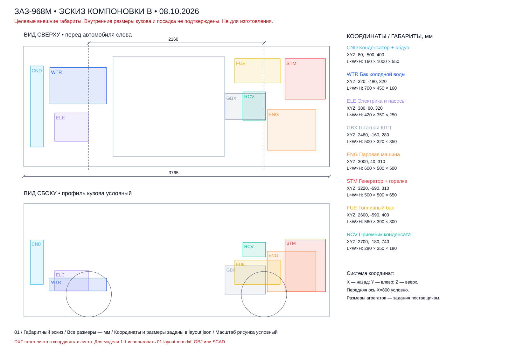
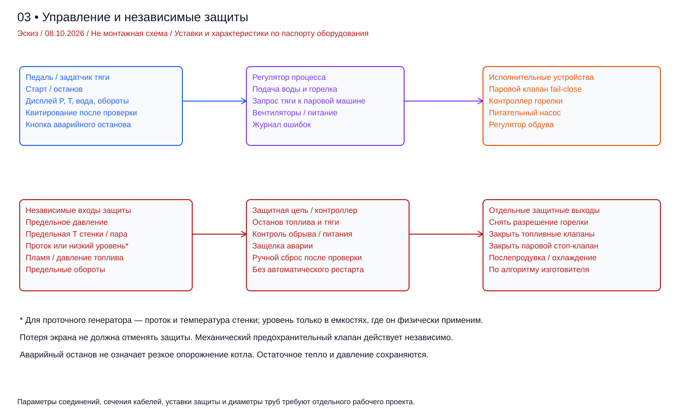
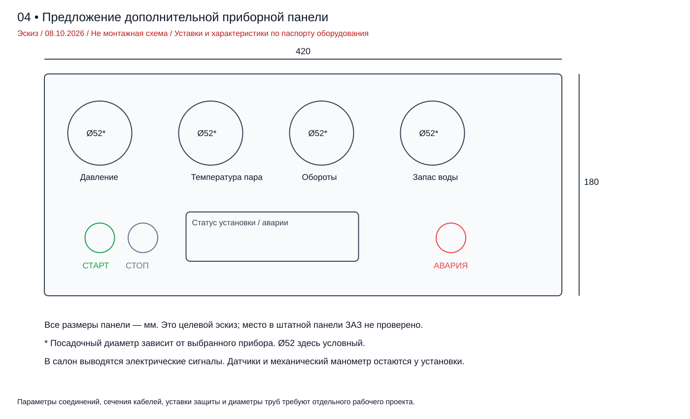
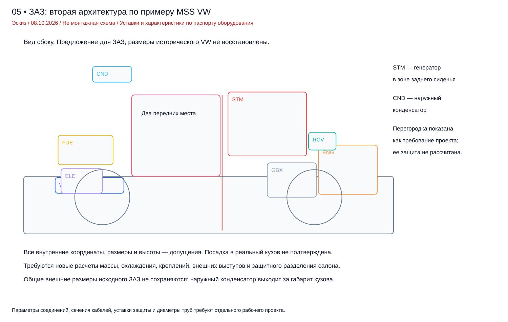

← 3D и калькулятор · PDF отчета
Инженерный эскиз и проверка осуществимости • версия 0.1 • 8 октября 2026 г.
Задача: автомобиль для дорог общего пользования в Финляндии и России; сравнение разных бюджетов и характеристик. Этот комплект содержит воспроизводимые предварительные расчеты, модель целевых габаритов, компоновочные чертежи, схему контура и управления. Чертежи котла, цилиндров, силовых креплений и адаптера для изготовления пока не разработаны: для них отсутствуют паспортные данные агрегатов, обмеры сопряжений и согласованные требования допуска.
Ни один из трех сценариев пока не подтвержден как пригодный к дорожной эксплуатации. Сценарий B подходит для дальнейшей проверки как проект с ограниченной мощностью и числом мест. Главные препятствия — отвод тепла, масса, ресурс трансмиссии и согласование необычной силовой установки. Увеличение бюджета само по себе эти препятствия не снимает.
При умеренном давлении и выпуске около атмосферного малая паровая машина может иметь низкий КПД. В выбранной модели конденсатор на полной нагрузке отводит 309–371 кВт, а вентиляторы дополнительно потребляют 4,7–5,7 кВт электрической мощности. Поэтому обычный передний радиатор без подтвержденной характеристики не является готовым решением. Эти числа относятся к расчетным допущениям, а не ко всем возможным паровым автомобилям.
Вариант C превышает условный предел полной массы 1200 кг уже с одним водителем: расчетная масса 1218,4 кг. При другой фактической массе донора вывод может измениться. Перед проектированием креплений обязательна масса автомобиля по четырем колесам и проверка его регистрационных ограничений.
| Параметр | Значение / статус |
|---|---|
| Наружные длина / ширина | 3765 / 1490 мм, совпадают в найденных альбомах |
| База | 2160 мм, технический альбом 1991 |
| Высота | 1370 мм с нагрузкой в альбоме 1991; в справочном габарите проекта принято 1400 мм. Состояние подвески требует проверки |
| Снаряженная / полная масса | 800 / 1200 кг по альбомам; в расчете исходная снаряженная масса 840 кг — консервативное допущение до взвешивания |
| Заводская мощность | 40 метрических л.с. = 29,42 кВт, исходные данные пользователя и альбом |
| Трансмиссия | Главная передача 4,125; передачи 3,80 / 2,118 / 1,409 / 0,964; сверить конкретную КПП |
| Внутренние полости / крепления | Достоверные координаты для посадки не извлечены; внешние габариты их не определяют |
| Нагрузки на оси | OCR таблиц дает противоречивое распределение. Предельные осевые нагрузки не приняты из OCR; нужны оригинальная таблица и документы машины |
Основание: Шейнин / Стрюк, технический альбом ЗАЗ-968М, 1991; Многокрасочный альбом ЗАЗ-968М, техническая характеристика; Фучаджи / Стрюк, руководство ЗАЗ-968М, 1988. Проверено 08.10.2026; применимость к конкретной машине и установке уточняется отдельно.
В найденных материалах есть схемы агрегатов, но нет проверенного полного цифрового кузова для этой переделки. Даже заводской чертеж не показывает коррозию, ремонтные изменения и деформации вашего экземпляра. Прежняя расчётная модель кузова является габаритной оболочкой. X передней оси = 800 мм в расчёте — допущение, а не опубликованный заводской размер переднего свеса. Отдельная реконструкция по фотографиям содержит 35 узлов: пол, ниши, перегородки, панели и остекление. В ней передняя ось принята X=675 мм по боковому снимку, внутренние координаты — гипотезы. Разницу 125 мм необходимо проверить обмерами до пересчёта осевых нагрузок. Источники и параметры: reconstruction.html.
Обновление компоновки: округлая реконструкция версии 2 и новый двухместный вариант открываются в assembly.html. Новые агрегаты переставлены без уменьшения исходных размеров; горелка Riello показана отдельно, конденсатор находится снаружи. Сетка не показывает новых пересечений, кроме грубого габарита штатной КПП с условным полом. Зазоры до 30 мм проверены как геометрический ориентир; теплоизоляция, сервис, привод насоса, водяной приёмник 57–95 л, массы и осевые нагрузки требуют отдельного проекта. Чертёж: drawings/06-revised-layout.pdf; таблица координат и проверка: packaging.html. Посадка реальных изделий не подтверждена.
Предпочтительное направление исследования: поршневая паровая машина, рассчитанный изготовителем проточный парогенератор с малым содержанием воды, жидкотопливная горелка, конденсатор, горячий приемник конденсата и отдельный бак холодной подпитки. Сохранение штатной КПП, сцепления и дифференциала уменьшает объем переделок привода, но требует ограничения момента и согласования оборотов.
Вода — рабочее тело; источник энергии — топливо. Для первого дорожного проекта целесообразно исследовать дизельное топливо с управляемой горелкой. Его бак не хранит пар. СУГ технически возможен, но добавляет отдельную систему баллона, газовой арматуры и согласования. Дрова и уголь ухудшают регулирование тепловыделения, требуют места для топки, удаления золы и защиты от искр; для компактной дорожной компоновки они неблагоприятны.
Электронагрев от тяговой батареи энергетически невыгоден для этой задачи. Для сценария C при полной нагрузке требуется около 381,3 кВт электрического нагрева при условном КПД нагревателя 95%. На 15 минут это 95,3 кВт·ч; при допущении 160 Вт·ч/кг масса батареи была бы 596 кг без дополнительной упаковки. Это расчетный пример, не характеристика выбранной батареи.
Промышленный парогенератор и паровая машина модельного масштаба не являются автоматически автомобильными агрегатами. У серийных производителей есть проточные решения, но подтвержденного комплекта нужной мощности, массы и габаритов для ЗАЗ в этом исследовании не найдено. В BOM указаны требования к закупке или заказной разработке, а не обещание наличия совместимых изделий.
Основание: Clayton: продуктовые линейки парогенераторов. Проверено 08.10.2026; применимость к конкретной машине и установке уточняется отдельно.
Ниже — авторские диапазоны планирования НИОКР, не проверенные рыночные цены и не смета подрядчика. Валюты представлены независимо для организации работ в России и Финляндии; пересчет курса не выполнялся. Стоимость автомобиля, серьезного кузовного ремонта, импорта, налогов и страхования не включена. Резерв расходов включен в диапазоны. Неудачная разработка и отказ в дорожном допуске возможны в любом диапазоне.
| Показатель | A — малая | B — умеренная | C — 40 л.с. на привод |
|---|---|---|---|
| Бюджет работ в РФ, млн ₽ | 0,8–1,5 | 2–4 | 4,5–9 |
| Бюджет работ в Финляндии, тыс. € | 12–25 | 30–60 | 65–120 |
| Полезная мощность к КПП, кВт | 8,0 | 18,0 | 29,4 |
| Расчетная целевая скорость, км/ч | 50 | 80 | 100 |
| Давление / температура на входе | 6 бар abs / 200 °C | 10 бар abs / 250 °C | 20 бар abs / 300 °C |
| Изоэнтропический КПД, допущение | 40% | 50% | 60% |
| Сухая масса нового оборудования, кг | 200 | 250 | 300 |
| Подпиточная вода / вода в контуре, кг | 30 / 15 | 40 / 20 | 50 / 25 |
| Топливо, л | 20 | 30 | 40 |
| Масса с водителем, кг | 1071,7 | 1145,1 | 1218,4 |
| Остаток до 1200 кг, кг | 128,3 | 55,0 | -18,4 |
| Состояние | Тепловая схема не подтверждена; бюджет высокий для 8 кВт | Кандидат для исследования; небольшой остаток массы | Превышение массы в принятых допущениях |
Снижение целевой мощности при низком давлении не обязательно уменьшает размер генератора: плохой КПД увеличивает расход пара, а мощность обдува дополнительно нагружает машину. Поэтому сценарий A в выбранной модели требует большего теплового оборудования, чем C. Это существенная причина исследовать повышение эффективности, а не закупать агрегаты только по номинальным л.с.
40 л.с. полезного привода требуют в C около 39,3 кВт на валу самой паровой машины: часть мощности расходуется на генератор, обдув и питание водой. Если купить машину на 29,42 кВт на валу, полезная тяговая мощность будет ниже 40 л.с.
Использованы формулы F = mg·Crr·cos(arctan(i)) + ½ρ·CdA·v² + mg·sin(arctan(i)) + ma; Pкол = Fv; Pприв = Pкол/ηтр; Mкол = Fr. Допущения: Crr=0,015, CdA=0,90 м², ρ=1,225 кг/м³, ηтр=0,85, радиус качения r=0,28 м. CdA, шины и КПД трансмиссии не измерены. В таблице масса 1200 кг; постоянная скорость, без ветра.
| км/ч | Ровная дорога, кВт | Подъем 5%, кВт | Подъем 10%, кВт |
|---|---|---|---|
| 30 | 2,1 | 7,9 | 13,6 |
| 50 | 4,6 | 14,2 | 23,7 |
| 60 | 6,5 | 18,0 | 29,4 |
| 80 | 11,7 | 27,1 | 42,3 |
| 90 | 15,3 | 32,6 | 49,7 |
| 100 | 19,7 | 38,9 | 57,9 |
| 110 | 24,8 | 46,0 | 66,9 |
Целевые 50/80/100 км/ч — режимы для сравнения, не подтвержденные максимальные скорости. Требуются запас тяги на ускорение, проверка старта на уклоне и изменение мощности при нагрузке. Например, ускорение 0,5 м/с² при 60 км/ч добавляет к требуемой мощности привода примерно 11,8 кВт для массы 1200 кг. На подъеме и при разгоне генератор должен обеспечить дополнительный расход пара; расчет установившегося цикла этого не доказывает.
Свойства h, s, ρ рассчитаны CoolProp 7.2.0, backend IF97::Water, по IAPWS IF97. Давления в модели абсолютные; показание манометра при обычном атмосферном давлении примерно на 1 бар ниже. Числа 6/10/20 бар abs являются сценариями расчета цикла, не разрешенными рабочими давлениями котла и не уставками защиты.
Основание: IAPWS IF97, формулировка свойств воды и пара; CoolProp: IF97 backend. Проверено 08.10.2026; применимость к конкретной машине и установке уточняется отдельно.
p выпуска = 1,2 бар abs, конденсат охлаждается до 80 °C, холодная подпитка 20 °C, возврат r=0,97. ηмех=0,90; ηнасоса=0,55; ηгенератора=0,80; ηкотла по низшей теплоте сгорания = 0,85. Для поршневой машины ηis — условный эквивалент эффективности расширения; он должен быть подтвержден картой расхода и индикаторными диаграммами. Клапанные потери, утечки, теплопередача в цилиндрах и расход при отсечке отдельно не моделируются.
h2s=h(p2,s1); h2=h1−ηis(h1−h2s); h3=r·hконденсата+(1−r)·hподпитки; wнас=(p1−p2)/(ρ3·ηнас); h4=h3+wнас. Удельная работа на валу wвал=ηмех(h1−h2). Расход пара ṁ=(Pприв+Pпост)/(wвал−wнас−wобдув), где wобдув учитывает связь тепловыделения, расхода воздуха и мощности генератора. Единицы внутри программы — СИ.
Qкотла=ṁ(h1−h4); Qконденсатора=rṁ(h2−hконденсата); Qпотерь пара=(1−r)ṁ(h2−hподпитки); Pгорелки=Qкотла/ηкотла. Топливо: НТС=42,6 МДж/кг и плотность 0,835 кг/л — допущения, которые следует заменить данными фактического топлива. Возврат 97% здесь эквивалент потерь пароводяного контура; фактическую продувку по химии воды нужно считать отдельно.
| Полная нагрузка | A | B | C |
|---|---|---|---|
| Пар, кг/ч | 573,4 | 551,7 | 484,2 |
| Тепло, переданное воде/пару, кВт | 401,7 | 400,6 | 362,3 |
| Горелка по НТС топлива, кВт | 472,6 | 471,3 | 426,2 |
| Конденсатор, кВт | 370,6 | 358,0 | 308,5 |
| Машина: мощность на валу, кВт | 16,7 | 27,6 | 39,3 |
| Питательный насос, кВт | 0,1 | 0,3 | 0,5 |
| Вентиляторы: электрическая мощность, кВт | 5,7 | 5,5 | 4,7 |
| Дизельное топливо, л/ч | 47,8 | 47,7 | 43,1 |
| Подпиточная вода при возврате 97%, кг/ч | 17,2 | 16,6 | 14,5 |
| КПД топливо → полезный привод, % | 1,7 | 3,8 | 6,9 |
Это мощность при непрерывной полной нагрузке, не расход на 100 км. Модель допускает постоянные КПД и постоянную мощность прочих вспомогательных нагрузок; реальный расход на малой нагрузке может быть хуже. Динамика нагрева и регулируемая отсечка пока отсутствуют. В sensitivity.csv сохранено сравнение ηis от 0,30 до 0,70 для каждого сценария.
Для воды предусмотрены два разных объема: холодная подпитка в отдельном баке и рабочая вода в генераторе, приемнике и трубопроводах. Холодный бак предлагается низко в передней части; горячий приемник — сзади рядом с питательным насосом, чтобы сократить всасывающую линию и уменьшить риск кавитации. Передний багажник нельзя нагружать исходя только из его объема: нужен расчет крепления к силовым элементам.
Бак подпитки с атмосферной вентиляцией и перегородками не является накопителем пара. Для горячего приемника нужны отдельные проверенные вентиляция/давление, температурный режим, полезный объем и высота установки. NPSHavailable = (pповерхности−pнасыщения)/(ρg)+z−hпотерь должен превышать NPSHrequired насоса с проектным запасом во всем диапазоне температур, крена и ускорения. Насос подбирается по расходу, напору, температуре и кавитации, а не только по названию «водяной».
| Показатель | A | B | C |
|---|---|---|---|
| Целевая постоянная скорость, км/ч | 50 | 80 | 100 |
| Расход топлива на этой скорости, л/ч | 29,3 | 32,6 | 30,5 |
| Расход топлива, л/100 км | 58,5 | 40,8 | 30,5 |
| Расчетный пробег до топлива или воды, км | 34 | 74 | 131 |
| Вода в открытом цикле на полной нагрузке, кг/ч | 328 | 413 | 410 |
| Время открытого цикла на полной нагрузке, мин | 4,4 | 4,6 | 5,8 |
Для подпиточного бака использованы 80% объема, остаток 20% — резерв. Запас хода относится только к установившемуся движению, без прогрева, стоянок, разгонов, уклонов, изменения погоды и обязательного резерва топлива. Не является гарантированным дорожным пробегом. Открытый цикл рассчитан отдельно с холодной водой на входе насоса, а не простым умножением расхода замкнутого цикла.
Открытый выпуск позволяет отказаться от конденсатора, но при этих расходах вода заканчивается примерно за 4–6 минут на полной нагрузке. Увеличение запаса до часа означает сотни килограммов воды. Для дорожного проекта замкнутый контур является главным направлением исследования; открытый выпуск остается самостоятельным вопросом видимости, шума и допуска.
Нужна водоподготовка по требованиям изготовителя: жесткость, соли, pH, кислород, контроль отложений. Масло от цилиндров необходимо отделять перед возвратом, если оно попадает в пар. Простой бытовой фильтр не подтверждает качество питательной воды. Для Финляндии и России важна защита от замерзания: слив всех запираемых полостей либо поддержание температуры по проекту; автомобильный антифриз в рабочий паровой контур без разрешения изготовителя не добавляют.
Основание: Spirax Sarco: Water for the Boiler. Проверено 08.10.2026; применимость к конкретной машине и установке уточняется отдельно.
Проверка Q=UAΔTlm дает площадь теплообмена, а не площадь передней решетки. Для сравнения приняты U=40 Вт/(м²·К), ΔTlm=40 К и нагрев воздуха на 25 К. Эти коэффициенты являются допущениями; площадь относится к эффективной поверхности теплообмена с согласованным коэффициентом U, эффективность оребрения отдельно не рассчитана. Расход воздуха: ṁвозд=Q/(cp·ΔTвозд); мощность вентилятора P=V̇возд·Δp/η.
Основание: Spirax Sarco: Heat Transfer. Проверено 08.10.2026; применимость к конкретной машине и установке уточняется отдельно.
| Показатель на полной нагрузке | A | B | C |
|---|---|---|---|
| Поверхность при заданном U и ΔTlm, м² | 231,6 | 223,7 | 192,8 |
| Расход воздуха, м³/с | 12,5 | 12,1 | 10,4 |
| Скорость через условную площадь 0,55 м², м/с | 22,7 | 22,0 | 18,9 |
Принят перепад воздуха 250 Па и общий КПД вентиляторов 0,55. На плотном автомобильном теплообменнике при таком расходе сопротивление может быть выше. На ходу набегающий воздух может уменьшить электрическую нагрузку, но требует расчета воздухозаборника, сопротивления, выхода воздуха и дополнительного сопротивления движению. В модели эффект набегающего потока не учтен; во всех режимах считается принудительный обдув. Поэтому числа не заменяют характеристику теплообменника.
Передний блок размером 160×1000×550 мм в 3D — только целевой габарит. Он не доказан как способный отвести расчетное тепло. Для продолжения нужен расчет изготовителя: Q при заданных температурах и расходах, противодавление по пару, расход/сопротивление воздуха, вентиляторы, шум, масса, режим стоянки при +30…+35 °C. Возможны дополнительные теплообменники, но их масса, воздуховоды и аэродинамика должны быть включены заново.
Вакуумный конденсатор может повысить работу расширения, но увеличивает объем выхлопного пара, требует герметичности, удаления воздуха и иной паровой машины. Регенерация, экономайзер и компаундное расширение требуют отдельной модели. Повышать КПД числом в таблице без изменения конструкции нельзя.
Обороты входного вала КПП: n = 60v/(2πr)·iглав·iпередачи. При 80 км/ч на четвертой передаче получаем около 3014 об/мин. В B условная машина рассчитана на 2200 об/мин; нужен согласующий привод, повышающий обороты входа КПП, либо другая паспортная рабочая частота. Это влияет на момент, подшипники и компоновку.
| Показатель | A | B | C |
|---|---|---|---|
| Момент машины на расчетных оборотах, Н·м | 99,9 | 119,9 | 125,1 |
| Частота вала машины, об/мин | 1600 | 2200 | 3000 |
M=60000P/(2πn) рассчитан по полной мощности на валу, включая отбор на вспомогательные системы; момент на входе КПП после отбора и согласования отличается. Стартовый момент поршневой машины может превышать номинальный. Штатные сцепление и КПП нельзя считать подходящими только потому, что полезная мощность не выше 40 л.с. Требуются ограничение момента, расчет крутильных колебаний, прочности зубьев, подшипников, теплового режима и проверка состояния старых деталей.
Для оценки масштаба двухцилиндровой машины двойного действия можно использовать P = pme·Vсум·2n/60. Для B, если условно принять эффективное среднее давление 0,20 МПа и ход 80 мм, потребуется Vсум≈1,88 л, то есть диаметр порядка 122 мм каждого из двух цилиндров без учета площади штока. Это оценка масштаба, не выбор цилиндров: pme зависит от распределения, отсечки и противодавления. Прочность, зазоры, материалы, смазка, дренажи и распределение пока не определены.
Mнов=Mдонора−Mснятого+Mсухой установки+Mподпитки+Mводы контура+Mтоплива+Mводителя. Принято: донор 840 кг, снято 120 кг с учетом старого топлива и демонтируемого оборудования; масса водителя 90 кг. Сухое оборудование 200/250/300 кг — целевой бюджет массы, не взвешенные изделия. Именно поэтому хорошие по мощности варианты могут оказаться непригодными после закупки.
| Прогноз массы, кг | A | B | C |
|---|---|---|---|
| Передняя ось, условно | 480,4 | 506,3 | 532,2 |
| Задняя ось, условно | 591,3 | 638,7 | 686,2 |
| Остаток полной массы | 128,3 | 55,0 | -18,4 |
Статика: ΔRзад=Σ[mj(xj−xперед)/L]; ΔRперед=Σmj−ΔRзад. Исходная доля передней оси 38% и координаты центров масс приняты условно. Допустимые нагрузки на оси не установлены, поэтому таблица не подтверждает их соблюдение. Если реальный донор весит 800 кг, общий прогноз уменьшается на 40 кг; это не решает проверку креплений и передней оси.
Передний бак, конденсатор и электрооборудование могут существенно превысить заводскую допустимую массу обычного груза в багажнике 50 кг. Нужна конструкция передачи усилий к проверенным силовым элементам, а не крепление к тонкому полу багажника. Трубопроводы и горячие агрегаты должны быть защищены от контакта при ходе подвески и ударе. В кузовном расчете нужны измеренная толщина и коррозия, материалы, сварные швы, нагрузки торможения/поворота, вибрация и согласованные аварийные нагрузки. Усиление кузова не повышает автоматически разрешенную полную массу.
В B до условных 1200 кг остаются только 55 кг при водителе 90 кг. Второй взрослый пассажир уже может не поместиться в этот бюджет массы. Число мест нельзя обещать до выбора реальных агрегатов. В C превышение с одним водителем 18,4 кг — основание пересмотреть массы, воду, мощность и архитектуру.
assembly.scad содержит параметризуемую компоновку для OpenSCAD; assembly.obj/mtl — габаритные твердые тела для импорта в CAD, единицы мм. index.html содержит локальный вращаемый 3D-просмотр с изменением координат и экспортом layout.json. Изменение модели не обновляет автоматически расчет массы и температур: inputs.json и тепловой расчет требуют отдельного согласования.
Проверены пересечения параллелепипедов восьми агрегатов и условной зоны салона. Прямых пересечений после корректировки нет; есть четыре пары с расстоянием менее условных 100 мм. Для пары топливный бак — горячий генератор зазор по X всего 60 мм; такой эскиз требует переработки теплового разделения и ударной защиты. Значение 100 мм служит фильтром компоновки и не является нормативным безопасным расстоянием.
| Файл / лист | Содержание |
|---|---|
| 01-layout.pdf / svg | Виды сверху и сбоку, координаты и целевые размеры агрегатов |
| 01-layout-mm.dxf | Вид сверху в реальных координатах, 1:1, мм |
| 01-layout-sheet.dxf | Графика листа в координатах листа; для модели использовать другой DXF |
| 02-process.pdf / svg | Пар, конденсат, подпитка, топливо, механический привод |
| 03-controls.pdf / svg | Обычное управление и независимая защитная цепь |
| 04-dashboard.pdf / svg | Эскиз панели 420×180 мм с условными приборами Ø52 |
Не проверены реальные колесные ниши, подвеска во всем ходе, рулевые детали, внутренняя обшивка, кузовные стенки, вводы, горячие зоны, ремонтный доступ, сборка и извлечение агрегатов. Паровые и жидкостные трассы в модели — осевые линии без подтвержденных диаметров и изоляции. Ни OBJ, ни внешняя длина автомобиля не доказывают, что выбранные детали подходят.



Педаль акселератора задает требуемую тягу через регулятор подачи пара и/или отсечки по возможностям выбранной машины. Горелка регулируется автоматически по давлению, температуре, протоку и состоянию генератора. Прямая связь педали с расходом топлива без учета пароводяного состояния не обеспечивает устойчивое управление. Паровое давление не должно поступать в салон через приборные трубки; используются электрические датчики и отдельный местный механический манометр у установки.
На дополнительной панели: давление, температура пара, обороты, запас холодной воды; также состояние горячего приемника, проток, температура стенки генератора, температура/давление выпуска, состояние пламени, напряжение питания и сообщения о неисправностях. Органы: разрешение запуска, штатный останов, аварийный останов, квитирование после устранения причины. Пороговые значения берутся из проекта и паспортов, а не из расчетной таблицы режимов.
Штатная 12-вольтовая сеть пригодна для индикации после расчета нагрузок. Силовой обдув потребует другой системы питания: в B оценка 5,5 кВт соответствует примерно 392 А при 14 В, поэтому целесообразно исследовать отдельную сеть 48 В с DC/DC для приборов. Это около 114 А при 48 В без прочих потребителей. Штатный генератор не покрывает такую нагрузку. Нужны характеристики генератора на малых оборотах, батарея для прогрева/послепродувки, защиты и расчет кабелей.
Защитная цепь должна работать независимо от дисплея и обычного регулятора: предельные давление/температура, отсутствие воды по применимому признаку, погасание пламени, превышение оборотов, потеря питания. При проточном генераторе контролируются проток и температура стенки; датчик уровня в нем может быть неприменим. При котле с водяным объемом необходима защита по уровню. Изготовитель определяет допустимые режимы после отключения горелки, чтобы остаточное тепло не повредило генератор.
Основание: Spirax Sarco: Level Controls; Spirax Sarco: Safety Valve Sizing. Проверено 08.10.2026; применимость к конкретной машине и установке уточняется отдельно.
Предохранительный клапан выбирается по наибольшей возможной генерации пара в аварийном режиме, расчетному давлению, противодавлению и паспортной пропускной способности. Между защищаемым объемом и клапаном не должно быть обычного отсечного крана. Сброс направляют отдельной рассчитанной трассой вне салона и зон людей; место, реактивные усилия и противодавление требуют проекта. Кнопка аварии не служит командой резко сбросить весь котел. Обычный микроконтроллер не является обоснованием надежности защит.
| Узел | Что запросить до выбора |
|---|---|
| Паровая машина | Карта мощности/момента/расхода пара, P и T на входе, допустимое противодавление, обороты, расход смазки, дренажи, размеры и масса |
| Парогенератор и горелка | Паропроизводительность и перегрев, тепловая мощность/КПД, масса сухая и мокрая, работа при крене/вибрации, модуляция, документы соответствия, ресурс, алгоритмы запуска/останова |
| Конденсатор | Q и противодавление на всех режимах, воздух/сопротивление, режим стоянки летом, масса, шум, вентиляторы и удаление воздуха |
| Питательный насос | Рабочая точка расход–напор, резерв по напору, допустимая температура, NPSH, уплотнения, электрическая/механическая мощность |
| Баки | Полезный объем, давление и вентиляция, материалы, перегородки, датчики, защита при ударе, доступ к сливу/чистке |
| Паровые трубы и клапаны | Материалы и допустимость при расчетных P/T, соединения, удлинение, напряжения, вибрация, теплоизоляция, пропускная способность, паспорт |
| Электрика/автоматика | Совместимость среды/температуры/вибрации, независимые защиты, отказобезопасность, питание, EMC, резерв на послепродувку |
| Адаптер/рама | Обмеры фланцев, первичного вала, направляющих/подшипников, креплений кузова; нагрузочные случаи, ресурс, сборка и обслуживание |
Сечение паровой магистрали начинается с оценки D=√(4ṁ/(πρu)), но приемлемая скорость u, падение давления, пусковой конденсат, арматура, изгибы и диаметр по давлению определяются совместно. Использование этой формулы как готового размера трубы недопустимо. Расчет толщины стенок, сварных соединений и предохранительного устройства выполняется отдельно по применимым требованиям и данным материалов.
Traficom указывает на необходимость modification inspection (muutoskatsastus), когда изменения существенно влияют на безопасность/выбросы или регистрационные данные. Для необычного парового привода нужно до закупки согласовать применимую процедуру с инспекционной станцией и Traficom; если изменения выходят за разрешенные правила, возможен запрос poikkeuslupa, но выдача не гарантирована. Стандартные инструкции для газовой или этанольной переделки не подтверждают допустимость парового привода.
Основание: Traficom: Modification inspection; Traficom: разрешение на отклонение от требований к переделкам. Проверено 08.10.2026; применимость к конкретной машине и установке уточняется отдельно.
Tukes регулирует оборудование под давлением; соответствие котла не заменяет дорожный допуск. Для встроенного в транспортное средство оборудования возможны специальные области применения и исключения, поэтому наличие CE само по себе не отвечает на вопрос процедуры. Нужно получить классификацию именно встроенной установки, требования к оценке соответствия, инспекции, эксплуатации и ответственному лицу. Мобильность, крен и автомобильные ударные нагрузки должны входить в оценку. Этот отчет не устанавливает категорию PED.
Основание: Tukes: Requirements for pressure equipment. Проверено 08.10.2026; применимость к конкретной машине и установке уточняется отдельно.
Постановление №413 описывает маршрут внесения изменений в эксплуатируемое транспортное средство: предварительная техническая экспертиза, разрешение Госавтоинспекции, выполнение работ, проверка после переделки и оформление результатов/регистрационных изменений. Для замены ДВС на паровой привод необходимо сначала подтвердить применимость этой процедуры и состав испытаний в аккредитованной лаборатории. Вопрос оформления импортированного или вновь создаваемого автомобиля может требовать иной процедуры.
Основание: Правительство РФ: постановление №413 от 06.04.2019. Проверено 08.10.2026; применимость к конкретной машине и установке уточняется отдельно.
По России нужно отдельно определить требования к генератору, арматуре и оборудованию под давлением с учетом области применения регламентов; отчет не присваивает котлу категорию и не утверждает необходимость регистрации в конкретном реестре. Возраст ЗАЗ сам по себе не означает освобождение переделки от требований. Сертификат европейского котла не заменяет автоматически документы, требуемые в России.
Россия и Финляндия требуют двух отдельных проверок применимости правил. Сначала определяют страну постоянной регистрации, затем режим поездок или ввоза в другую страну, таможенные документы и страхование. Нельзя считать российское согласование автоматическим разрешением зарегистрировать переделку в Финляндии или наоборот. Условия пересечения границы этим отчетом не проверялись.
Предлагаемая структура целевого бюджета: 25% машина и согласование привода; 20% парогенератор/горелка; 12% охлаждение; 8% вода/топливо/арматура; 10% автоматика/электрика; 10% конструирование/крепления; 5% испытания и подготовка документов; 10% резерв. Это план распределения, а не цены поставщиков. Для Финляндии долю инженерной работы и испытаний, вероятно, потребуется увеличить; это предположение до коммерческих предложений.
Первый этап — только осуществимость: документы автомобиля, обмеры, реальные массы, требования двух стран, предварительные запросы на машину, генератор и конденсатор, согласование архитектуры. На него можно выделить 10–15% выбранного целевого бюджета. Если подтвержденного теплообменника или разрешимого режима регистрации нет, изготовление автомобильной установки не начинается; стендовая работа может оставаться полезной частью исследования.
| Этап | Конкретный результат |
|---|---|
| 0. Данные и правовой маршрут | Паспорт донора/год/VIN, страна основной регистрации, взвешивание по колесам, согласованные применимые требования |
| 1. Тепловой и силовой стенд | Измеренные расход, момент, работа горелки, защиты, прогрев, охлаждение и останов; уточнение расчетов |
| 2. Компоновка реальных изделий | CAD/STEP агрегатов и обмеренный кузов; полная проверка пересечений, подвески, тепловых зон и доступа |
| 3. Рабочая документация | Чертежи адаптера и креплений, трубопроводы, жгуты, проект котла изготовителя, спецификация с артикулами и актуальной сметой |
| 4. Автомобильные испытания | Взвешивание, тормоза, управляемость, шум, применимые выбросы, тепловой режим летом/зимой, герметичность, вибрация |
| 5. Оформление | Результаты проверок по согласованному маршруту основной регистрации; отдельный порядок эксплуатации/ввоза во вторую страну |
Обмеры нужны в общей системе координат: передняя/задняя ось, фактические внутренние поверхности моторного отсека и багажника, силовые элементы и толщина металла, фланец КПП, первичный вал/подшипник, посадка сцепления, крепления снятого двигателя, рабочий ход подвески и колес, рулевые детали, штатный бак, проходы под днищем, выхлоп, вход/выход воздуха и пространство панели. В measurements.csv даны строки для заполнения, без вымышленных значений.
Необходимые расчеты рабочего проекта: полный цикл с картами машины; перегрев и регулирование на переходных режимах; прочность/усталость генератора, трубы и соединений; испытания сварки и контроль материалов; пропускная способность защиты и сброс; потери давления и гидроудар; насос и NPSH; объем приемника и баков; расширение труб и опоры; нагрузка/усталость рамы и кузова; трансмиссия и вибрация; тепловое воздействие на топливо и салон; электрические токи, кабели, резерв питания; тормоза и устойчивость; отказоустойчивость и программная логика.
Предварительное время прогрева можно оценить t≥[mвод·cp·ΔT+mмет·cмет·ΔT+прочие нагрузки]/Qполезного прогрева. Вода в генераторе не равна всему запасу подпитки. Без массы и конструкции выбранного генератора, его стартового режима и допустимых скоростей нагрева время выхода на тягу не вычисляется надежно. Обещание «запуска за несколько минут» в этом комплекте не сделано.
Открыть index.html в браузере: отчет, ссылки на чертежи, 3D и интерактивное сравнение. Для пересчета изменить inputs.json, установить зависимости из requirements.txt и выполнить calculate.py; затем build_geometry.py, build_diagrams.py и build_report.py. После изменений геометрии нужно отдельно синхронизировать массы и их центры в расчетах. Материалы опубликованы на GitHub Pages; обращения в лаборатории и ведомства не отправлялись.
Формулы и результаты проверены на баланс энергии, размерности и контрольные случаи; проверки записаны в verification.json. Это проверка программы и арифметики. Она не подтверждает выбранные КПД, характеристики отсутствующих изделий, посадку и допускаемость дорожной эксплуатации.
Обзор Steve Lehto показывает переделанный Hirth, наружный конденсатор и приборы управления; заднее сиденье занято установкой. Ориентиры в видео: 00:31 — двигатель; 01:01 — конденсатор; 01:46 — задняя часть салона; 01:59 — приборная панель.
Основание: Steve Lehto: 1963 Steam Powered VW, оригинальный обзор 2017. Проверено 08.10.2026; применимость к конкретной машине и установке уточняется отдельно.
В собственном репортаже Lehto уточняет: трехцилиндровый двухтактный Hirth от снегохода, проточный генератор с испарительной горелкой и электронным управлением, заявленная производительность 500 фунтов пара в час (≈227 кг/ч). Генератор установлен вместо задних сидений. Конденсатор над лобовым стеклом снабжен направляющими воздуха.
Основание: Steve Lehto: репортаж об автомобиле, Road & Track / Yahoo. Проверено 08.10.2026; применимость к конкретной машине и установке уточняется отдельно.
В письме от 03.05.2011 владелец Tom Kimmel прямо связывает Hirth автомобиля MSS с bash/bump-клапанами и прямоточным (uniflow) выпускным коллектором. Этот источник подтверждает тип распределения, но не дает полного рабочего проекта конкретной установки.
Основание: Tom Kimmel: письмо о машине MSS и Hirth, 03.05.2011. Проверено 08.10.2026; применимость к конкретной машине и установке уточняется отдельно.
Общее устройство такого цикла: жидкотопливная горелка нагревает генератор → пар поступает в цилиндры → машина вращает привод → отработавший пар конденсируется → вода возвращается в питание. Конкретные топливо, рабочие P/T, мощность, массы, запас воды, расход топлива, передаточное согласование и логика всех переключателей из этих источников не установлены надежно. Число 227 кг/ч не является мощностью двигателя и не заменяет карту расхода.
Для ЗАЗ этот пример оправдывает исследование второй архитектуры: два места, генератор в освобожденной зоне заднего сиденья с проектной защитной перегородкой, наружный или иной крупный конденсатор, машина и КПП сзади. Это повышает свободу компоновки, но сохраняет вопросы тепла, массы и допуска. Файл layout-vw-inspired.json и лист 05 содержат новое целевое предложение для ЗАЗ; размеры VW не восстановлены. Тепловые расчеты A/B/C относятся к прежним допущениям цикла и не описывают характеристики исторического VW.
Дорожный статус VW в американском обзоре не является основанием допуска переделанного ЗАЗ в России или Финляндии. Салонная установка потребует отдельного обоснования теплового и аварийного разделения; наружный конденсатор — креплений, обзорности, внешних выступов, аэродинамики, отвода горячих сред и защиты людей.

Для каждого сценария ниже показаны формулы и числовые подстановки. Полный интерактивный расчёт дороги, открытого цикла и чувствительности доступен на странице расчётов. Все свойства воды — IF97/CoolProp 7.2.0; принятые КПД и массы не подтверждены выбранными изделиями. Подстановка округлена, вычисления выполнены без промежуточного округления.
Дорожная нагрузка ниже относится к целевой скорости 50 км/ч при прогнозной массе сценария и нулевом уклоне. Паровой цикл — к номинальной мощности; эти режимы показаны отдельно.
Скорость в СИ
Формула: v = V / 3,6
Подстановка: 50 / 3,6
Результат: 13,9 м/с
V — скорость, км/ч; 1 км/ч = 1/3,6 м/с.
Угол подъёма
Формула: θ = arctan(i)
Подстановка: arctan(0)
Результат: ≈ 0 рад
i — уклон как доля: 5 % = 0,05.
Сопротивление качению
Формула: Fкач = m · g · Crr · cos(θ)
Подстановка: 1071,7 · 9,80665 · 0,015 · cos(0)
Результат: 157,6 Н
m — масса автомобиля с загрузкой, кг; g — стандартное ускорение свободного падения, м/с²; Crr — принятое сопротивление качению.
Аэродинамическое сопротивление
Формула: Fвозд = ρвозд · CdA · v² / 2
Подстановка: 1,225 · 0,9 · 13,889² / 2
Результат: 106,3 Н
ρвозд — плотность воздуха, кг/м³; CdA — коэффициент сопротивления × фронтальная площадь, м². Без ветра.
Сила на подъёме
Формула: Fуклон = m · g · sin(θ)
Подстановка: 1071,7 · 9,80665 · sin(0)
Результат: ≈ 0 Н
Подъём положителен; отрицательная тяга на спуске не моделирует торможение.
Разгон
Формула: Fразгон = m · a
Подстановка: 1071,7 · 0
Результат: ≈ 0 Н
a — ускорение, м/с². В таблицах установившееся движение: a = 0. Вращательная инерция здесь не учтена.
Суммарная сила
Формула: F = Fкач + Fвозд + Fуклон + Fразгон
Подстановка: 157,647 + 106,337 + 0 + 0
Результат: 264 Н
Сумма сил сопротивления и разгона.
Мощность на колёсах
Формула: Pкол = F · v / 1000
Подстановка: 263,984 · 13,889 / 1000
Результат: 3,7 кВт
1000 Вт = 1 кВт.
Мощность на входе КПП
Формула: Pприв = Pкол / ηтр
Подстановка: 3,666 / 0,85
Результат: 4,3 кВт
ηтр — принятый КПД трансмиссии; это не измеренная карта КПП ЗАЗ.
Момент на колёсах
Формула: Mкол = F · Rкол
Подстановка: 263,984 · 0,28
Результат: 73,9 Н·м
Rкол — принятый радиус качения, м; суммарный момент ведущих колёс.
Обороты колёс
Формула: nкол = 60 · v / (2π · Rкол)
Подстановка: 60 · 13,889 / (2π · 0,28)
Результат: 474 об/мин
Без проскальзывания шин.
Если включить передачу 1: обороты входа КПП
Формула: nКПП = nкол · iглав · iперед
Подстановка: 473,675 · 4,125 · 3,8
Результат: 7425 об/мин
Это четыре альтернативы для одной скорости, а не одновременные обороты колёс. Большое число на низшей передаче не подтверждает допустимость такого режима. Руководство: III = 1,409; паспортные ограничения валов и состояние донора требуют проверки.
Если включить передачу 2: обороты входа КПП
Формула: nКПП = nкол · iглав · iперед
Подстановка: 473,675 · 4,125 · 2,118
Результат: 4138 об/мин
Это четыре альтернативы для одной скорости, а не одновременные обороты колёс. Большое число на низшей передаче не подтверждает допустимость такого режима. Руководство: III = 1,409; паспортные ограничения валов и состояние донора требуют проверки.
Если включить передачу 3: обороты входа КПП
Формула: nКПП = nкол · iглав · iперед
Подстановка: 473,675 · 4,125 · 1,409
Результат: 2753 об/мин
Это четыре альтернативы для одной скорости, а не одновременные обороты колёс. Большое число на низшей передаче не подтверждает допустимость такого режима. Руководство: III = 1,409; паспортные ограничения валов и состояние донора требуют проверки.
Если включить передачу 4: обороты входа КПП
Формула: nКПП = nкол · iглав · iперед
Подстановка: 473,675 · 4,125 · 0,964
Результат: 1884 об/мин
Это четыре альтернативы для одной скорости, а не одновременные обороты колёс. Большое число на низшей передаче не подтверждает допустимость такого режима. Руководство: III = 1,409; паспортные ограничения валов и состояние донора требуют проверки.
Путь за оборот колеса
Формула: Lкол = 2π · Rкол
Подстановка: 2π · 0,28
Результат: 1,76 м
Радиус качения 0,28 м — допущение. Нужен измеренный путь за оборот под нагрузкой; внешний радиус шины и радиус качения отличаются.
Вход КПП на выбранной передаче 4
Формула: nКПП = nкол · iглав · iперед
Подстановка: 473,675 · 4,125 · 0,964
Результат: 1884 об/мин
При замкнутом сцеплении. Это обороты входного вала, не колёс.
Обороты машины, требуемые кинематикой
Формула: nмаш = nКПП · iадап
Подстановка: 1883,57 · 1
Результат: 1884 об/мин
iадап = nмаш/nКПП: 1 — прямое соединение; меньше 1 — повышение оборотов к КПП. Паспортный диапазон машины отсутствует; сравнение с целевым номиналом не задаёт предельные обороты. При нулевой скорости работа машины требует размыкания привода.
Отношение адаптера для целевых оборотов машины
Формула: iадап,цель = nмаш,цель / nКПП
Подстановка: 1600 / 1883,57
Результат: 0,849 отношение
Это требуемое отношение для одной скорости и передачи, не выбранное изделие. Его КПД, прочность и рабочий диапазон не установлены; дополнительная потеря мощности ещё не внесена.
Скорость при целевых оборотах и текущем адаптере
Формула: V = 3,6 · Lкол · nмаш,цель / (60 · iадап · iглав · iперед)
Подстановка: 3,6 · 1,759 · 1600 / (60 · 1 · 4,125 · 0,964)
Результат: 42,5 км/ч
Кинематическая скорость; не максимальная скорость и не проверка наличия мощности.
Момент на входе КПП для дорожной нагрузки
Формула: MКПП = 60000 · Pприв,дор / (2π · nКПП)
Подстановка: 60000 · 4,313 / (2π · 1883,57)
Результат: 21,9 Н·м
При движении. На месте выражение P/ω не определено; пусковой момент нужно считать отдельно. Вспомогательные потребители машины сюда не входят.
Предел скорости по мощности на ровной дороге
Формула: m·g·Crr·(V/3,6) + ρвозд·CdA·(V/3,6)³/2 = 1000·ηтр·Pном
Подстановка: 1071,7 · 9,80665 · 0,015 · (V/3,6) + 1,225 · 0,9 · (V/3,6)³ / 2 = 1000 · 0,85 · 8; решение бисекцией 60 шагов на [0;160]
Результат: 68,5 км/ч
Только верхняя оценка по мощности: не учитывает обороты/передачи, охлаждение, ветер, разгон и дорожный допуск. Для расчёта использована масса сценария, а не изменённая дорожная масса.
Давление на входе
Формула: p₁ = pбар · 10⁵
Подстановка: 6 · 10⁵
Результат: 600000 Па abs
Все давления абсолютные, не манометрические. Потери в трубах пока не учтены.
Давление выпуска
Формула: p₂ = pвып,бар · 10⁵
Подстановка: 1,2 · 10⁵
Результат: 120000 Па abs
Принятое противодавление; характеристики реального конденсатора отсутствуют.
Температура на входе
Формула: T₁ = t₁ + 273,15
Подстановка: 200 + 273,15
Результат: 473,2 К
Разность температур в K численно равна разности в °C.
Проверка перегрева
Формула: tнас = TIF97(p₁, x=1) − 273,15
Подстановка: TIF97(600000 Па, x=1) − 273,15
Результат: 158,8 °C
x=1 — насыщенный пар. t₁ должен превышать tнас.
Энтальпия входного пара
Формула: h₁ = hIF97(p₁, T₁) / 1000
Подстановка: hIF97(600000 Па, 473,15 К) / 1000
Результат: 2850,7 кДж/кг
IF97 выдаёт h в Дж/кг. Это термодинамическое свойство, а не паспорт двигателя.
Энтропия входного пара
Формула: s₁ = sIF97(p₁, T₁) / 1000
Подстановка: sIF97(600000 Па, 473,15 К) / 1000
Результат: 6,968 кДж/(кг·К)
PropsSI("S","P",p₁,"T",T₁,"IF97::Water").
Идеальное изоэнтропное расширение
Формула: h₂s = hIF97(p₂, s₁) / 1000
Подстановка: hIF97(120000 Па, 6968,353 Дж/(кг·К)) / 1000
Результат: 2558,6 кДж/кг
s₂s=s₁. PropsSI("H","P",p₂,"S",s₁·1000,"IF97::Water").
Действительная энтальпия выпуска
Формула: h₂ = h₁ − ηis · (h₁ − h₂s)
Подстановка: 2850,663 − 0,4 · (2850,663 − 2558,624)
Результат: 2733,8 кДж/кг
ηis — принятый изоэнтропный КПД; карта паровой машины не получена.
Плотность входного пара
Формула: ρ₁ = ρIF97(p₁, T₁)
Подстановка: ρIF97(600000 Па, 473,15 К)
Результат: 2,84 кг/м³
Для предварительной оценки прохода паровой трубы; расход и допустимая скорость ещё не задают толщину стенки.
Температура выпуска
Формула: t₂ = TIF97(p₂, h₂) − 273,15
Подстановка: TIF97(120000 Па, 2733847,393 Дж/кг) − 273,15
Результат: 129,5 °C
Свойство выпуска, рассчитанное IF97 для выбранного ηis.
Степень сухости выпуска
Формула: x₂ = (h₂ − hf) / (hg − hf), только при hf ≤ h₂ ≤ hg
Подстановка: (2733,847 − 439,299) / (2683,058 − 439,299)
Результат: Не определено доля
hf и hg — энтальпии насыщенной жидкости и пара при p₂. За пределами двухфазной области x не определён; x>1 не является физической степенью сухости.
Энтальпия возвратной воды
Формула: hк = hIF97(p₂, tк + 273,15) / 1000
Подстановка: hIF97(120000 Па, 80 + 273,15 К) / 1000
Результат: 335 кДж/кг
tк — принятая температура конденсата, °C.
Энтальпия холодной подпитки
Формула: hпод = hIF97(p₂, tпод + 273,15) / 1000
Подстановка: hIF97(120000 Па, 20 + 273,15 К) / 1000
Результат: 84 кДж/кг
tпод — принятая температура холодного запаса.
Смешение воды
Формула: h₃ = r · hк + (1 − r) · hпод
Подстановка: 0,97 · 335,006 + (1 − 0,97) · 84,031
Результат: 327,5 кДж/кг
r — доля возвращённого пара по массе; не подтверждённая герметичность установки.
Плотность перед насосом
Формула: ρ₃ = ρIF97(p₂, h₃)
Подстановка: ρIF97(120000 Па, 327477,186 Дж/кг)
Результат: 972,923 кг/м³
PropsSI("D","P",p₂,"H",h₃·1000,"IF97::Water"). В браузере свойства берутся из пересчитанного results.json.
Температура смешанной воды перед насосом
Формула: t₃ = TIF97(p₂, h₃) − 273,15
Подстановка: TIF97(120000 Па, 327477,186 Дж/кг) − 273,15
Результат: 78,2 °C
В стационарном режиме смешанная вода холоднее конденсата; фактический максимум зависит от схемы и переходных процессов.
Удельная работа питания
Формула: wнас = (p₁ − p₂) / (1000 · ρ₃ · ηнас)
Подстановка: (600000 − 120000) / (1000 · 972,923 · 0,55)
Результат: 0,9 кДж/кг
Модель несжимаемой жидкости. ηнас=0,55 — допущение, не КПД Cat Pumps. Не учтены потери и запас напора.
Энтальпия после насоса
Формула: h₄ = h₃ + wнас
Подстановка: 327,477 + 0,897016
Результат: 328,4 кДж/кг
Вся работа насоса в этой модели передана жидкости.
Удельная работа машины на валу
Формула: wвал = ηмех · (h₁ − h₂)
Подстановка: 0,9 · (2850,663 − 2733,847)
Результат: 105,1 кДж/кг
ηмех — принятый механический КПД машины.
Воздух для конденсатора на 1 кг пара
Формула: bвозд = r · (h₂ − hк) / (cp,возд · ΔTвозд)
Подстановка: 0,97 · (2733,847 − 335,006) / (1,005 · 25)
Результат: 92,6 кг воздуха/кг пара
cp,возд — кДж/(кг·К); ΔTвозд — K. Только оценка теплового баланса воздуха.
Удельная нагрузка обдува на вал
Формула: wобдув = bвозд · Δpвозд / (1000 · ρохл · ηвент · ηген)
Подстановка: 92,612 · 250 / (1000 · 1,18 · 0,55 · 0,8)
Результат: 44,6 кДж/кг пара
Δpвозд — Па; ρохл — кг/м³. Плотность обдува 1,18 отделена от дорожной плотности 1,225. Все параметры обдува пока допущения.
Работа после насоса и обдува
Формула: wпол = wвал − wнас − wобдув
Подстановка: 105,134 − 0,897016 − 44,594
Результат: 59,6 кДж/кг
Если wпол≤0, сценарий не имеет решения при этих допущениях.
Массовый расход пара
Формула: ṁ = (Pприв + Pпост) / wпол
Подстановка: (8 + 1,5) / 59,644
Результат: 0,1593 кг/с
кВт / (кДж/кг) = кг/с. Pпост — постоянные вспомогательные нагрузки на валу, без питания воды и обдува.
Паропроизводительность
Формула: Gпар = 3600 · ṁ
Подстановка: 3600 · 0,159279
Результат: 573,4 кг/ч
1 час = 3600 секунд.
Расход подпиточной воды
Формула: Gпод = (1 − r) · Gпар
Подстановка: (1 − 0,97) · 573,406
Результат: 17,2 кг/ч
Продувка, дренажи, пусковые потери и дополнительные утечки отдельно не включены.
Тепло в парогенератор
Формула: Qген = ṁ · (h₁ − h₄)
Подстановка: 0,159279 · (2850,663 − 328,374)
Результат: 401,7 кВт
Баланс стационарного потока, без кинетической/потенциальной энергии.
Тепло в конденсатор
Формула: Qконд = r · ṁ · (h₂ − hк)
Подстановка: 0,97 · 0,159279 · (2733,847 − 335,006)
Результат: 370,6 кВт
Учитывает охлаждение возвращённой доли до tк.
Мощность топлива по НТС
Формула: Qтопл = Qген / ηкот
Подстановка: 401,749 / 0,85
Результат: 472,6 кВт НТС
ηкот — принятый КПД по низшей теплоте сгорания. Карта горелки/генератора отсутствует.
Массовый расход дизеля
Формула: Gтопл = 3,6 · Qтопл / HНТС
Подстановка: 3,6 · 472,645 / 42,6
Результат: 39,9 кг/ч
1 кВт = 3,6 МДж/ч; HНТС — МДж/кг. Свойства принятого топлива нужно сверить с поставкой.
Объёмный расход дизеля
Формула: V̇топл = Gтопл / ρдиз
Подстановка: 39,942 / 0,835
Результат: 47,8 л/ч
ρдиз — кг/л, задано при условной температуре.
Валовая мощность машины
Формула: Pвал = ṁ · wвал
Подстановка: 0,159279 · 105,134
Результат: 16,7 кВт
Мощность до отбора на насос, обдув и постоянные вспомогательные нагрузки.
Мощность питания воды
Формула: Pнас = ṁ · wнас
Подстановка: 0,159279 · 0,897016
Результат: 0,1 кВт
Не фактическая электрическая мощность выбранного насосного агрегата.
Объёмный расход воздуха
Формула: V̇возд = Qконд / (cp,возд · ΔTвозд · ρохл)
Подстановка: 370,623 / (1,005 · 25 · 1,18)
Результат: 12,5 м³/с
Предположение о равномерном прогреве воздуха; нет карты сопротивления теплообменника.
Электрическая мощность вентиляторов
Формула: Pвент = V̇возд · Δpвозд / (1000 · ηвент)
Подстановка: 12,501 · 250 / (1000 · 0,55)
Результат: 5,7 кВт
Не подтверждённая рабочая точка вентиляторов.
Отбор на генератор для обдува
Формула: Pген = Pвент / ηген
Подстановка: 5,682 / 0,8
Результат: 7,1 кВт
Генератор электрический; ηген — допущение.
Суммарная вспомогательная нагрузка
Формула: Pвсп = Pпост + Pген
Подстановка: 1,5 + 7,103
Результат: 8,6 кВт
Питательный насос показан отдельно.
Энергия потерянного пара
Формула: Qпот,пар = (1 − r) · ṁ · (h₂ − hпод)
Подстановка: (1 − 0,97) · 0,159279 · (2733,847 − 84,031)
Результат: 12,7 кВт
Относительно входной холодной подпитки.
Механические потери
Формула: Qмех = ṁ · (h₁ − h₂) · (1 − ηмех)
Подстановка: 0,159279 · (2850,663 − 2733,847) · (1 − 0,9)
Результат: 1,9 кВт
Принятая модель потерь машины.
Проверка первого закона термодинамики
Формула: εQ = Qген + Pнас − Qконд − Qпот,пар − Pвал − Qмех
Подстановка: 401,749 + 0,142876 − 370,623 − 12,662 − 16,746 − 1,861
Результат: ≈ 0 кВт
Должно быть ≈0. Нулевой остаток подтверждает арифметику модели, но не принятые КПД.
Баланс мощности вала
Формула: εP = Pвал − Pнас − Pген − Pпост − Pприв
Подстановка: 16,746 − 0,142876 − 7,103 − 1,5 − 8
Результат: ≈ 0 кВт
Насос и вентиляторы входят в расход пара, а не добавлены после расчёта.
Полезный КПД по НТС
Формула: ηпол = Pприв / Qтопл
Подстановка: 8 / 472,645
Результат: 0,0169 доля
Это расчётный КПД всей установки до входа КПП.
Удельный расход пара
Формула: gпар = Gпар / Pприв
Подстановка: 573,406 / 8
Результат: 71,7 кг/(кВт·ч)
При Pприв=0 удельный расход не определён.
Требуемая поверхность теплообмена
Формула: Aтепл = 1000 · Qконд / (U · ΔTlm)
Подстановка: 1000 · 370,623 / (40 · 40)
Результат: 231,64 м²
U — Вт/(м²·К), ΔTlm — K. Это развитая поверхность, не фронтальная площадь. Реальные U и ΔTlm не получены; ΔTlm пока задана, а не выведена из температур.
Валовой момент машины при целевых оборотах
Формула: Mвал = 60000 · Pвал / (2π · n)
Подстановка: 60000 · 16,746 / (2π · 1600)
Результат: 99,9 Н·м
n — целевые обороты машины, не обороты колёс и не паспортный предел. Момент включает вспомогательные отборы; не является моментом на входе КПП.
Момент для тяги до адаптера, при целевых оборотах
Формула: Mтяга = 60000 · Pприв / (2π · nмаш,цель)
Подстановка: 60000 · 8 / (2π · 1600)
Результат: 47,7 Н·м
После вспомогательных отборов. Если реальная частота отличается от целевой, изменится момент; КПД адаптера и рабочая карта машины отсутствуют.
Ток вентиляторов при 14 В
Формула: Iвент = 1000 · Pвент / Uэл
Подстановка: 1000 · 5,682 / 14
Результат: 405,9 А
Оценка постоянного тока; без прочих потребителей, пускового тока и потерь проводки.
Ток вентиляторов при 48 В
Формула: Iвент = 1000 · Pвент / Uэл
Подстановка: 1000 · 5,682 / 48
Результат: 118,4 А
Оценка постоянного тока; без прочих потребителей, пускового тока и потерь проводки.
Объёмный расход воды в насос
Формула: V̇нас = 60000 · ṁ / ρ₃
Подстановка: 60000 · 0,159279 / 972,923
Результат: 9,8 л/мин
60 с/мин × 1000 л/м³. Применён расход всего пара, а не только подпитки.
Оценка оборотов Cat Pumps по паспорту
Формула: nнас ≈ nпас · V̇нас / V̇пас
Подстановка: 950 · 9,823 / 15
Результат: 622 об/мин
Паспорт: 15 л/мин при 950 об/мин; минимум 100 об/мин. Пропорциональность — предварительная оценка, не карта насоса. Требуются TB002, потери, регулирование и запас напора.
Сверка обычных уплотнений насоса
Формула: ΔtNBR = t₃ − tNBR,max
Подстановка: 78,204 − 71
Результат: 7,2 К
Паспорт Cat Pumps: NBR до 71 °C; HT .3000 до 82 °C. Для возвратной воды 80 °C обычное исполнение не подходит по этому критерию. Температура перед насосом после смешения ниже tк; горячая ветвь и переходные режимы требуют отдельной проверки.
Полезный КПД в процентах
Формула: ηпол,% = 100 · Pприв / Qтопл
Подстановка: 100 · 8 / 472,645
Результат: 1,7 %
Низкий полезный КПД объясняет большую горелку. Это следствие допущений ηis и потерь; паспортная карта машины отсутствует.
Объём впуска пара за оборот при целевых оборотах
Формула: Vвп,оборот = 60000 · ṁ / (ρ₁ · nмаш,цель)
Подстановка: 60000 · 0,159279 / (2,84 · 1600)
Результат: 2,1 л/об
Объём свежего пара при входных P/T. Не рабочий объём цилиндров: нужны число цилиндров, отсечка, кратность действия, мёртвый объём и утечки. Расход нельзя объявлять достижимым только по мощности.
Фронт целевого конденсатора B, поток вдоль X
Формула: Aфронт = B · H / 10⁶
Подстановка: 1000 · 550 / 10⁶
Результат: 0,55 м²
Внешний габарит схемы B; оценка при использовании всего фронта, без перекрытия рамой. Это не площадь рёбер и не реальный теплообменник. Для A/C используется только как сравнение.
Средняя скорость воздуха через целевой фронт
Формула: uвозд = V̇возд / Aфронт
Подстановка: 12,501 / 0,55
Результат: 22,7 м/с
Показывает интенсивность требуемого обдува. Перепад 250 Па и теплоотдача при этой скорости не подтверждены. Нужны характеристики теплообменника и вентилятора вместе; размерная коробка в CAD не доказывает отвод тепла.
Масса холодной воды
Формула: mвод = Vвод · ρвод
Подстановка: 30 · 1
Результат: 30 кг
ρвод=1 кг/л — приближение для холодного запаса. Плотность горячей воды перед насосом рассчитана IF97 отдельно.
Масса нового топлива
Формула: mтопл = Vтопл · ρдиз
Подстановка: 20 · 0,835
Результат: 16,7 кг
Старое топливо включено в снимаемую массу.
Масса автомобиля с водителем
Формула: m = mисх + ΣΔmⱼ
Подстановка: 840 + (-120 + 128 + 40 + 20 + 12 + 30 + 15 + 16,7 + 90)
Результат: 1071,7 кг
Сухая установка — заданная суммарная масса, не масса из CAD. Вода в контуре учтена отдельно.
Исходная масса на задней оси
Формула: mзад,0 = mисх · (1 − fперед)
Подстановка: 840 · (1 − 0,38)
Результат: 520,8 кг
fперед=0,38 — допущение до взвешивания донора.
Снятые агрегаты и старое топливо · вклад в заднюю ось
Формула: Δmзад,j = Δmⱼ · (xⱼ − xперед) / Lбазы
Подстановка: -120 · (3230 − 800) / 2160
Результат: -135 кг
Статическое равновесие моментов. Координаты и распределение сухой массы условные, не взяты из реальной сборки.
64 % сухой установки · вклад в заднюю ось
Формула: Δmзад,j = Δmⱼ · (xⱼ − xперед) / Lбазы
Подстановка: 128 · (3250 − 800) / 2160
Результат: 145,2 кг
Статическое равновесие моментов. Координаты и распределение сухой массы условные, не взяты из реальной сборки.
20 % сухой установки · вклад в заднюю ось
Формула: Δmзад,j = Δmⱼ · (xⱼ − xперед) / Lбазы
Подстановка: 40 · (420 − 800) / 2160
Результат: -7 кг
Статическое равновесие моментов. Координаты и распределение сухой массы условные, не взяты из реальной сборки.
10 % сухой установки · вклад в заднюю ось
Формула: Δmзад,j = Δmⱼ · (xⱼ − xперед) / Lбазы
Подстановка: 20 · (550 − 800) / 2160
Результат: -2,3 кг
Статическое равновесие моментов. Координаты и распределение сухой массы условные, не взяты из реальной сборки.
6 % сухой установки · вклад в заднюю ось
Формула: Δmзад,j = Δmⱼ · (xⱼ − xперед) / Lбазы
Подстановка: 12 · (1800 − 800) / 2160
Результат: 5,6 кг
Статическое равновесие моментов. Координаты и распределение сухой массы условные, не взяты из реальной сборки.
Холодный запас воды · вклад в заднюю ось
Формула: Δmзад,j = Δmⱼ · (xⱼ − xперед) / Lбазы
Подстановка: 30 · (600 − 800) / 2160
Результат: -2,8 кг
Статическое равновесие моментов. Координаты и распределение сухой массы условные, не взяты из реальной сборки.
Вода в контуре · вклад в заднюю ось
Формула: Δmзад,j = Δmⱼ · (xⱼ − xперед) / Lбазы
Подстановка: 15 · (3100 − 800) / 2160
Результат: 16 кг
Статическое равновесие моментов. Координаты и распределение сухой массы условные, не взяты из реальной сборки.
Новое топливо · вклад в заднюю ось
Формула: Δmзад,j = Δmⱼ · (xⱼ − xперед) / Lбазы
Подстановка: 16,7 · (2800 − 800) / 2160
Результат: 15,5 кг
Статическое равновесие моментов. Координаты и распределение сухой массы условные, не взяты из реальной сборки.
Водитель · вклад в заднюю ось
Формула: Δmзад,j = Δmⱼ · (xⱼ − xперед) / Lбазы
Подстановка: 90 · (1650 − 800) / 2160
Результат: 35,4 кг
Статическое равновесие моментов. Координаты и распределение сухой массы условные, не взяты из реальной сборки.
Прогноз нагрузки на заднюю ось
Формула: mзад = mзад,0 + ΣΔmзад,j
Подстановка: 520,8 + (70,463)
Результат: 591,3 кг
Эквивалент массы нагрузки; допустимые нагрузки на оси не установлены.
Прогноз нагрузки на переднюю ось
Формула: mперед = m − mзад
Подстановка: 1071,7 − 591,263
Результат: 480,4 кг
CAD-перемещения не пересчитывают этот прогноз автоматически.
Остаток до справочной полной массы
Формула: Δmзапас = mполн,спр − m
Подстановка: 1200 − 1071,7
Результат: 128,3 кг
Справочная масса 1200 кг не является допуском переделки; отрицательный остаток означает превышение.
Используемый холодный запас
Формула: mвод,пол = Vвод · ρвод · fпол
Подстановка: 30 · 1 · 0,8
Результат: 24 кг
fпол=0,8 — 20 % запаса воды оставлено в резерве. Вода в контуре в запас подпитки не входит.
Время до расходования воды
Формула: tвод = mвод,пол / Gпод
Подстановка: 24 / 17,202
Результат: 1,4 ч
Для текущего постоянного режима. При нулевой подпитке ограничение по воде не определено.
Время до расходования топлива
Формула: tтопл = Vтопл / V̇топл
Подстановка: 20 / 47,835
Результат: 0,4 ч
Резерв топлива, прогрев и остановки отдельно не включены.
Условная дистанция по запасам
Формула: S = V · min(tвод, tтопл)
Подстановка: 50 · min(1,395, 0,418108)
Результат: 20,9 км
Не подтверждённый дорожный запас хода. При номинальном режиме мощность и скорость могут не соответствовать дорожному сопротивлению; в дорожном режиме остаются неподтверждёнными КПД, кинематика, насос, горелка и охлаждение. Прогрев, продувка и резерв топлива не учтены.
Бак холодной воды · внешний объём целевого габарита
Формула: Vвнеш = L · B · H / 10⁶
Подстановка: 700 · 450 · 160 / 10⁶
Результат: 50,4 л
Размеры в мм, 10⁶ мм³ = 1 л. Это внешний параллелепипед, а не полезный объём бака; стенки, перегородки и газовый запас не вычтены.
Топливный бак · внешний объём целевого габарита
Формула: Vвнеш = L · B · H / 10⁶
Подстановка: 560 · 300 · 300 / 10⁶
Результат: 50,4 л
Размеры в мм, 10⁶ мм³ = 1 л. Это внешний параллелепипед, а не полезный объём бака; стенки, перегородки и газовый запас не вычтены.
Приемник конденсата · внешний объём целевого габарита
Формула: Vвнеш = L · B · H / 10⁶
Подстановка: 280 · 350 · 180 / 10⁶
Результат: 17,6 л
Размеры в мм, 10⁶ мм³ = 1 л. Это внешний параллелепипед, а не полезный объём бака; стенки, перегородки и газовый запас не вычтены.
Дорожная нагрузка ниже относится к целевой скорости 80 км/ч при прогнозной массе сценария и нулевом уклоне. Паровой цикл — к номинальной мощности; эти режимы показаны отдельно.
Скорость в СИ
Формула: v = V / 3,6
Подстановка: 80 / 3,6
Результат: 22,2 м/с
V — скорость, км/ч; 1 км/ч = 1/3,6 м/с.
Угол подъёма
Формула: θ = arctan(i)
Подстановка: arctan(0)
Результат: ≈ 0 рад
i — уклон как доля: 5 % = 0,05.
Сопротивление качению
Формула: Fкач = m · g · Crr · cos(θ)
Подстановка: 1145,05 · 9,80665 · 0,015 · cos(0)
Результат: 168,4 Н
m — масса автомобиля с загрузкой, кг; g — стандартное ускорение свободного падения, м/с²; Crr — принятое сопротивление качению.
Аэродинамическое сопротивление
Формула: Fвозд = ρвозд · CdA · v² / 2
Подстановка: 1,225 · 0,9 · 22,222² / 2
Результат: 272,2 Н
ρвозд — плотность воздуха, кг/м³; CdA — коэффициент сопротивления × фронтальная площадь, м². Без ветра.
Сила на подъёме
Формула: Fуклон = m · g · sin(θ)
Подстановка: 1145,05 · 9,80665 · sin(0)
Результат: ≈ 0 Н
Подъём положителен; отрицательная тяга на спуске не моделирует торможение.
Разгон
Формула: Fразгон = m · a
Подстановка: 1145,05 · 0
Результат: ≈ 0 Н
a — ускорение, м/с². В таблицах установившееся движение: a = 0. Вращательная инерция здесь не учтена.
Суммарная сила
Формула: F = Fкач + Fвозд + Fуклон + Fразгон
Подстановка: 168,437 + 272,222 + 0 + 0
Результат: 440,7 Н
Сумма сил сопротивления и разгона.
Мощность на колёсах
Формула: Pкол = F · v / 1000
Подстановка: 440,659 · 22,222 / 1000
Результат: 9,8 кВт
1000 Вт = 1 кВт.
Мощность на входе КПП
Формула: Pприв = Pкол / ηтр
Подстановка: 9,792 / 0,85
Результат: 11,5 кВт
ηтр — принятый КПД трансмиссии; это не измеренная карта КПП ЗАЗ.
Момент на колёсах
Формула: Mкол = F · Rкол
Подстановка: 440,659 · 0,28
Результат: 123,4 Н·м
Rкол — принятый радиус качения, м; суммарный момент ведущих колёс.
Обороты колёс
Формула: nкол = 60 · v / (2π · Rкол)
Подстановка: 60 · 22,222 / (2π · 0,28)
Результат: 758 об/мин
Без проскальзывания шин.
Если включить передачу 1: обороты входа КПП
Формула: nКПП = nкол · iглав · iперед
Подстановка: 757,881 · 4,125 · 3,8
Результат: 11880 об/мин
Это четыре альтернативы для одной скорости, а не одновременные обороты колёс. Большое число на низшей передаче не подтверждает допустимость такого режима. Руководство: III = 1,409; паспортные ограничения валов и состояние донора требуют проверки.
Если включить передачу 2: обороты входа КПП
Формула: nКПП = nкол · iглав · iперед
Подстановка: 757,881 · 4,125 · 2,118
Результат: 6621 об/мин
Это четыре альтернативы для одной скорости, а не одновременные обороты колёс. Большое число на низшей передаче не подтверждает допустимость такого режима. Руководство: III = 1,409; паспортные ограничения валов и состояние донора требуют проверки.
Если включить передачу 3: обороты входа КПП
Формула: nКПП = nкол · iглав · iперед
Подстановка: 757,881 · 4,125 · 1,409
Результат: 4405 об/мин
Это четыре альтернативы для одной скорости, а не одновременные обороты колёс. Большое число на низшей передаче не подтверждает допустимость такого режима. Руководство: III = 1,409; паспортные ограничения валов и состояние донора требуют проверки.
Если включить передачу 4: обороты входа КПП
Формула: nКПП = nкол · iглав · iперед
Подстановка: 757,881 · 4,125 · 0,964
Результат: 3014 об/мин
Это четыре альтернативы для одной скорости, а не одновременные обороты колёс. Большое число на низшей передаче не подтверждает допустимость такого режима. Руководство: III = 1,409; паспортные ограничения валов и состояние донора требуют проверки.
Путь за оборот колеса
Формула: Lкол = 2π · Rкол
Подстановка: 2π · 0,28
Результат: 1,76 м
Радиус качения 0,28 м — допущение. Нужен измеренный путь за оборот под нагрузкой; внешний радиус шины и радиус качения отличаются.
Вход КПП на выбранной передаче 4
Формула: nКПП = nкол · iглав · iперед
Подстановка: 757,881 · 4,125 · 0,964
Результат: 3014 об/мин
При замкнутом сцеплении. Это обороты входного вала, не колёс.
Обороты машины, требуемые кинематикой
Формула: nмаш = nКПП · iадап
Подстановка: 3013,713 · 1
Результат: 3014 об/мин
iадап = nмаш/nКПП: 1 — прямое соединение; меньше 1 — повышение оборотов к КПП. Паспортный диапазон машины отсутствует; сравнение с целевым номиналом не задаёт предельные обороты. При нулевой скорости работа машины требует размыкания привода.
Отношение адаптера для целевых оборотов машины
Формула: iадап,цель = nмаш,цель / nКПП
Подстановка: 2200 / 3013,713
Результат: 0,73 отношение
Это требуемое отношение для одной скорости и передачи, не выбранное изделие. Его КПД, прочность и рабочий диапазон не установлены; дополнительная потеря мощности ещё не внесена.
Скорость при целевых оборотах и текущем адаптере
Формула: V = 3,6 · Lкол · nмаш,цель / (60 · iадап · iглав · iперед)
Подстановка: 3,6 · 1,759 · 2200 / (60 · 1 · 4,125 · 0,964)
Результат: 58,4 км/ч
Кинематическая скорость; не максимальная скорость и не проверка наличия мощности.
Момент на входе КПП для дорожной нагрузки
Формула: MКПП = 60000 · Pприв,дор / (2π · nКПП)
Подстановка: 60000 · 11,52 / (2π · 3013,713)
Результат: 36,5 Н·м
При движении. На месте выражение P/ω не определено; пусковой момент нужно считать отдельно. Вспомогательные потребители машины сюда не входят.
Предел скорости по мощности на ровной дороге
Формула: m·g·Crr·(V/3,6) + ρвозд·CdA·(V/3,6)³/2 = 1000·ηтр·Pном
Подстановка: 1145,05 · 9,80665 · 0,015 · (V/3,6) + 1,225 · 0,9 · (V/3,6)³ / 2 = 1000 · 0,85 · 18; решение бисекцией 60 шагов на [0;160]
Результат: 96,9 км/ч
Только верхняя оценка по мощности: не учитывает обороты/передачи, охлаждение, ветер, разгон и дорожный допуск. Для расчёта использована масса сценария, а не изменённая дорожная масса.
Давление на входе
Формула: p₁ = pбар · 10⁵
Подстановка: 10 · 10⁵
Результат: 1000000 Па abs
Все давления абсолютные, не манометрические. Потери в трубах пока не учтены.
Давление выпуска
Формула: p₂ = pвып,бар · 10⁵
Подстановка: 1,2 · 10⁵
Результат: 120000 Па abs
Принятое противодавление; характеристики реального конденсатора отсутствуют.
Температура на входе
Формула: T₁ = t₁ + 273,15
Подстановка: 250 + 273,15
Результат: 523,2 К
Разность температур в K численно равна разности в °C.
Проверка перегрева
Формула: tнас = TIF97(p₁, x=1) − 273,15
Подстановка: TIF97(1000000 Па, x=1) − 273,15
Результат: 179,9 °C
x=1 — насыщенный пар. t₁ должен превышать tнас.
Энтальпия входного пара
Формула: h₁ = hIF97(p₁, T₁) / 1000
Подстановка: hIF97(1000000 Па, 523,15 К) / 1000
Результат: 2943,2 кДж/кг
IF97 выдаёт h в Дж/кг. Это термодинамическое свойство, а не паспорт двигателя.
Энтропия входного пара
Формула: s₁ = sIF97(p₁, T₁) / 1000
Подстановка: sIF97(1000000 Па, 523,15 К) / 1000
Результат: 6,927 кДж/(кг·К)
PropsSI("S","P",p₁,"T",T₁,"IF97::Water").
Идеальное изоэнтропное расширение
Формула: h₂s = hIF97(p₂, s₁) / 1000
Подстановка: hIF97(120000 Па, 6926,623 Дж/(кг·К)) / 1000
Результат: 2542,9 кДж/кг
s₂s=s₁. PropsSI("H","P",p₂,"S",s₁·1000,"IF97::Water").
Действительная энтальпия выпуска
Формула: h₂ = h₁ − ηis · (h₁ − h₂s)
Подстановка: 2943,222 − 0,5 · (2943,222 − 2542,852)
Результат: 2743 кДж/кг
ηis — принятый изоэнтропный КПД; карта паровой машины не получена.
Плотность входного пара
Формула: ρ₁ = ρIF97(p₁, T₁)
Подстановка: ρIF97(1000000 Па, 523,15 К)
Результат: 4,297 кг/м³
Для предварительной оценки прохода паровой трубы; расход и допустимая скорость ещё не задают толщину стенки.
Температура выпуска
Формула: t₂ = TIF97(p₂, h₂) − 273,15
Подстановка: TIF97(120000 Па, 2743037,213 Дж/кг) − 273,15
Результат: 134 °C
Свойство выпуска, рассчитанное IF97 для выбранного ηis.
Степень сухости выпуска
Формула: x₂ = (h₂ − hf) / (hg − hf), только при hf ≤ h₂ ≤ hg
Подстановка: (2743,037 − 439,299) / (2683,058 − 439,299)
Результат: Не определено доля
hf и hg — энтальпии насыщенной жидкости и пара при p₂. За пределами двухфазной области x не определён; x>1 не является физической степенью сухости.
Энтальпия возвратной воды
Формула: hк = hIF97(p₂, tк + 273,15) / 1000
Подстановка: hIF97(120000 Па, 80 + 273,15 К) / 1000
Результат: 335 кДж/кг
tк — принятая температура конденсата, °C.
Энтальпия холодной подпитки
Формула: hпод = hIF97(p₂, tпод + 273,15) / 1000
Подстановка: hIF97(120000 Па, 20 + 273,15 К) / 1000
Результат: 84 кДж/кг
tпод — принятая температура холодного запаса.
Смешение воды
Формула: h₃ = r · hк + (1 − r) · hпод
Подстановка: 0,97 · 335,006 + (1 − 0,97) · 84,031
Результат: 327,5 кДж/кг
r — доля возвращённого пара по массе; не подтверждённая герметичность установки.
Плотность перед насосом
Формула: ρ₃ = ρIF97(p₂, h₃)
Подстановка: ρIF97(120000 Па, 327477,186 Дж/кг)
Результат: 972,923 кг/м³
PropsSI("D","P",p₂,"H",h₃·1000,"IF97::Water"). В браузере свойства берутся из пересчитанного results.json.
Температура смешанной воды перед насосом
Формула: t₃ = TIF97(p₂, h₃) − 273,15
Подстановка: TIF97(120000 Па, 327477,186 Дж/кг) − 273,15
Результат: 78,2 °C
В стационарном режиме смешанная вода холоднее конденсата; фактический максимум зависит от схемы и переходных процессов.
Удельная работа питания
Формула: wнас = (p₁ − p₂) / (1000 · ρ₃ · ηнас)
Подстановка: (1000000 − 120000) / (1000 · 972,923 · 0,55)
Результат: 1,6 кДж/кг
Модель несжимаемой жидкости. ηнас=0,55 — допущение, не КПД Cat Pumps. Не учтены потери и запас напора.
Энтальпия после насоса
Формула: h₄ = h₃ + wнас
Подстановка: 327,477 + 1,645
Результат: 329,1 кДж/кг
Вся работа насоса в этой модели передана жидкости.
Удельная работа машины на валу
Формула: wвал = ηмех · (h₁ − h₂)
Подстановка: 0,9 · (2943,222 − 2743,037)
Результат: 180,2 кДж/кг
ηмех — принятый механический КПД машины.
Воздух для конденсатора на 1 кг пара
Формула: bвозд = r · (h₂ − hк) / (cp,возд · ΔTвозд)
Подстановка: 0,97 · (2743,037 − 335,006) / (1,005 · 25)
Результат: 93 кг воздуха/кг пара
cp,возд — кДж/(кг·К); ΔTвозд — K. Только оценка теплового баланса воздуха.
Удельная нагрузка обдува на вал
Формула: wобдув = bвозд · Δpвозд / (1000 · ρохл · ηвент · ηген)
Подстановка: 92,967 · 250 / (1000 · 1,18 · 0,55 · 0,8)
Результат: 44,8 кДж/кг пара
Δpвозд — Па; ρохл — кг/м³. Плотность обдува 1,18 отделена от дорожной плотности 1,225. Все параметры обдува пока допущения.
Работа после насоса и обдува
Формула: wпол = wвал − wнас − wобдув
Подстановка: 180,166 − 1,645 − 44,764
Результат: 133,8 кДж/кг
Если wпол≤0, сценарий не имеет решения при этих допущениях.
Массовый расход пара
Формула: ṁ = (Pприв + Pпост) / wпол
Подстановка: (18 + 2,5) / 133,758
Результат: 0,1533 кг/с
кВт / (кДж/кг) = кг/с. Pпост — постоянные вспомогательные нагрузки на валу, без питания воды и обдува.
Паропроизводительность
Формула: Gпар = 3600 · ṁ
Подстановка: 3600 · 0,153262
Результат: 551,7 кг/ч
1 час = 3600 секунд.
Расход подпиточной воды
Формула: Gпод = (1 − r) · Gпар
Подстановка: (1 − 0,97) · 551,745
Результат: 16,6 кг/ч
Продувка, дренажи, пусковые потери и дополнительные утечки отдельно не включены.
Тепло в парогенератор
Формула: Qген = ṁ · (h₁ − h₄)
Подстановка: 0,153262 · (2943,222 − 329,122)
Результат: 400,6 кВт
Баланс стационарного потока, без кинетической/потенциальной энергии.
Тепло в конденсатор
Формула: Qконд = r · ṁ · (h₂ − hк)
Подстановка: 0,97 · 0,153262 · (2743,037 − 335,006)
Результат: 358 кВт
Учитывает охлаждение возвращённой доли до tк.
Мощность топлива по НТС
Формула: Qтопл = Qген / ηкот
Подстановка: 400,643 / 0,85
Результат: 471,3 кВт НТС
ηкот — принятый КПД по низшей теплоте сгорания. Карта горелки/генератора отсутствует.
Массовый расход дизеля
Формула: Gтопл = 3,6 · Qтопл / HНТС
Подстановка: 3,6 · 471,345 / 42,6
Результат: 39,8 кг/ч
1 кВт = 3,6 МДж/ч; HНТС — МДж/кг. Свойства принятого топлива нужно сверить с поставкой.
Объёмный расход дизеля
Формула: V̇топл = Gтопл / ρдиз
Подстановка: 39,832 / 0,835
Результат: 47,7 л/ч
ρдиз — кг/л, задано при условной температуре.
Валовая мощность машины
Формула: Pвал = ṁ · wвал
Подстановка: 0,153262 · 180,166
Результат: 27,6 кВт
Мощность до отбора на насос, обдув и постоянные вспомогательные нагрузки.
Мощность питания воды
Формула: Pнас = ṁ · wнас
Подстановка: 0,153262 · 1,645
Результат: 0,3 кВт
Не фактическая электрическая мощность выбранного насосного агрегата.
Объёмный расход воздуха
Формула: V̇возд = Qконд / (cp,возд · ΔTвозд · ρохл)
Подстановка: 357,989 / (1,005 · 25 · 1,18)
Результат: 12,07 м³/с
Предположение о равномерном прогреве воздуха; нет карты сопротивления теплообменника.
Электрическая мощность вентиляторов
Формула: Pвент = V̇возд · Δpвозд / (1000 · ηвент)
Подстановка: 12,075 · 250 / (1000 · 0,55)
Результат: 5,5 кВт
Не подтверждённая рабочая точка вентиляторов.
Отбор на генератор для обдува
Формула: Pген = Pвент / ηген
Подстановка: 5,489 / 0,8
Результат: 6,9 кВт
Генератор электрический; ηген — допущение.
Суммарная вспомогательная нагрузка
Формула: Pвсп = Pпост + Pген
Подстановка: 2,5 + 6,861
Результат: 9,4 кВт
Питательный насос показан отдельно.
Энергия потерянного пара
Формула: Qпот,пар = (1 − r) · ṁ · (h₂ − hпод)
Подстановка: (1 − 0,97) · 0,153262 · (2743,037 − 84,031)
Результат: 12,2 кВт
Относительно входной холодной подпитки.
Механические потери
Формула: Qмех = ṁ · (h₁ − h₂) · (1 − ηмех)
Подстановка: 0,153262 · (2943,222 − 2743,037) · (1 − 0,9)
Результат: 3,1 кВт
Принятая модель потерь машины.
Проверка первого закона термодинамики
Формула: εQ = Qген + Pнас − Qконд − Qпот,пар − Pвал − Qмех
Подстановка: 400,643 + 0,252045 − 357,989 − 12,226 − 27,613 − 3,068
Результат: ≈ 0 кВт
Должно быть ≈0. Нулевой остаток подтверждает арифметику модели, но не принятые КПД.
Баланс мощности вала
Формула: εP = Pвал − Pнас − Pген − Pпост − Pприв
Подстановка: 27,613 − 0,252045 − 6,861 − 2,5 − 18
Результат: ≈ 0 кВт
Насос и вентиляторы входят в расход пара, а не добавлены после расчёта.
Полезный КПД по НТС
Формула: ηпол = Pприв / Qтопл
Подстановка: 18 / 471,345
Результат: 0,0382 доля
Это расчётный КПД всей установки до входа КПП.
Удельный расход пара
Формула: gпар = Gпар / Pприв
Подстановка: 551,745 / 18
Результат: 30,7 кг/(кВт·ч)
При Pприв=0 удельный расход не определён.
Требуемая поверхность теплообмена
Формула: Aтепл = 1000 · Qконд / (U · ΔTlm)
Подстановка: 1000 · 357,989 / (40 · 40)
Результат: 223,74 м²
U — Вт/(м²·К), ΔTlm — K. Это развитая поверхность, не фронтальная площадь. Реальные U и ΔTlm не получены; ΔTlm пока задана, а не выведена из температур.
Валовой момент машины при целевых оборотах
Формула: Mвал = 60000 · Pвал / (2π · n)
Подстановка: 60000 · 27,613 / (2π · 2200)
Результат: 119,9 Н·м
n — целевые обороты машины, не обороты колёс и не паспортный предел. Момент включает вспомогательные отборы; не является моментом на входе КПП.
Момент для тяги до адаптера, при целевых оборотах
Формула: Mтяга = 60000 · Pприв / (2π · nмаш,цель)
Подстановка: 60000 · 18 / (2π · 2200)
Результат: 78,1 Н·м
После вспомогательных отборов. Если реальная частота отличается от целевой, изменится момент; КПД адаптера и рабочая карта машины отсутствуют.
Ток вентиляторов при 14 В
Формула: Iвент = 1000 · Pвент / Uэл
Подстановка: 1000 · 5,489 / 14
Результат: 392 А
Оценка постоянного тока; без прочих потребителей, пускового тока и потерь проводки.
Ток вентиляторов при 48 В
Формула: Iвент = 1000 · Pвент / Uэл
Подстановка: 1000 · 5,489 / 48
Результат: 114,3 А
Оценка постоянного тока; без прочих потребителей, пускового тока и потерь проводки.
Объёмный расход воды в насос
Формула: V̇нас = 60000 · ṁ / ρ₃
Подстановка: 60000 · 0,153262 / 972,923
Результат: 9,5 л/мин
60 с/мин × 1000 л/м³. Применён расход всего пара, а не только подпитки.
Оценка оборотов Cat Pumps по паспорту
Формула: nнас ≈ nпас · V̇нас / V̇пас
Подстановка: 950 · 9,452 / 15
Результат: 599 об/мин
Паспорт: 15 л/мин при 950 об/мин; минимум 100 об/мин. Пропорциональность — предварительная оценка, не карта насоса. Требуются TB002, потери, регулирование и запас напора.
Сверка обычных уплотнений насоса
Формула: ΔtNBR = t₃ − tNBR,max
Подстановка: 78,204 − 71
Результат: 7,2 К
Паспорт Cat Pumps: NBR до 71 °C; HT .3000 до 82 °C. Для возвратной воды 80 °C обычное исполнение не подходит по этому критерию. Температура перед насосом после смешения ниже tк; горячая ветвь и переходные режимы требуют отдельной проверки.
Полезный КПД в процентах
Формула: ηпол,% = 100 · Pприв / Qтопл
Подстановка: 100 · 18 / 471,345
Результат: 3,8 %
Низкий полезный КПД объясняет большую горелку. Это следствие допущений ηis и потерь; паспортная карта машины отсутствует.
Объём впуска пара за оборот при целевых оборотах
Формула: Vвп,оборот = 60000 · ṁ / (ρ₁ · nмаш,цель)
Подстановка: 60000 · 0,153262 / (4,297 · 2200)
Результат: 1 л/об
Объём свежего пара при входных P/T. Не рабочий объём цилиндров: нужны число цилиндров, отсечка, кратность действия, мёртвый объём и утечки. Расход нельзя объявлять достижимым только по мощности.
Фронт целевого конденсатора B, поток вдоль X
Формула: Aфронт = B · H / 10⁶
Подстановка: 1000 · 550 / 10⁶
Результат: 0,55 м²
Внешний габарит схемы B; оценка при использовании всего фронта, без перекрытия рамой. Это не площадь рёбер и не реальный теплообменник. Для A/C используется только как сравнение.
Средняя скорость воздуха через целевой фронт
Формула: uвозд = V̇возд / Aфронт
Подстановка: 12,075 / 0,55
Результат: 22 м/с
Показывает интенсивность требуемого обдува. Перепад 250 Па и теплоотдача при этой скорости не подтверждены. Нужны характеристики теплообменника и вентилятора вместе; размерная коробка в CAD не доказывает отвод тепла.
Масса холодной воды
Формула: mвод = Vвод · ρвод
Подстановка: 40 · 1
Результат: 40 кг
ρвод=1 кг/л — приближение для холодного запаса. Плотность горячей воды перед насосом рассчитана IF97 отдельно.
Масса нового топлива
Формула: mтопл = Vтопл · ρдиз
Подстановка: 30 · 0,835
Результат: 25 кг
Старое топливо включено в снимаемую массу.
Масса автомобиля с водителем
Формула: m = mисх + ΣΔmⱼ
Подстановка: 840 + (-120 + 160 + 50 + 25 + 15 + 40 + 20 + 25,05 + 90)
Результат: 1145,1 кг
Сухая установка — заданная суммарная масса, не масса из CAD. Вода в контуре учтена отдельно.
Исходная масса на задней оси
Формула: mзад,0 = mисх · (1 − fперед)
Подстановка: 840 · (1 − 0,38)
Результат: 520,8 кг
fперед=0,38 — допущение до взвешивания донора.
Снятые агрегаты и старое топливо · вклад в заднюю ось
Формула: Δmзад,j = Δmⱼ · (xⱼ − xперед) / Lбазы
Подстановка: -120 · (3230 − 800) / 2160
Результат: -135 кг
Статическое равновесие моментов. Координаты и распределение сухой массы условные, не взяты из реальной сборки.
64 % сухой установки · вклад в заднюю ось
Формула: Δmзад,j = Δmⱼ · (xⱼ − xперед) / Lбазы
Подстановка: 160 · (3250 − 800) / 2160
Результат: 181,5 кг
Статическое равновесие моментов. Координаты и распределение сухой массы условные, не взяты из реальной сборки.
20 % сухой установки · вклад в заднюю ось
Формула: Δmзад,j = Δmⱼ · (xⱼ − xперед) / Lбазы
Подстановка: 50 · (420 − 800) / 2160
Результат: -8,8 кг
Статическое равновесие моментов. Координаты и распределение сухой массы условные, не взяты из реальной сборки.
10 % сухой установки · вклад в заднюю ось
Формула: Δmзад,j = Δmⱼ · (xⱼ − xперед) / Lбазы
Подстановка: 25 · (550 − 800) / 2160
Результат: -2,9 кг
Статическое равновесие моментов. Координаты и распределение сухой массы условные, не взяты из реальной сборки.
6 % сухой установки · вклад в заднюю ось
Формула: Δmзад,j = Δmⱼ · (xⱼ − xперед) / Lбазы
Подстановка: 15 · (1800 − 800) / 2160
Результат: 6,9 кг
Статическое равновесие моментов. Координаты и распределение сухой массы условные, не взяты из реальной сборки.
Холодный запас воды · вклад в заднюю ось
Формула: Δmзад,j = Δmⱼ · (xⱼ − xперед) / Lбазы
Подстановка: 40 · (600 − 800) / 2160
Результат: -3,7 кг
Статическое равновесие моментов. Координаты и распределение сухой массы условные, не взяты из реальной сборки.
Вода в контуре · вклад в заднюю ось
Формула: Δmзад,j = Δmⱼ · (xⱼ − xперед) / Lбазы
Подстановка: 20 · (3100 − 800) / 2160
Результат: 21,3 кг
Статическое равновесие моментов. Координаты и распределение сухой массы условные, не взяты из реальной сборки.
Новое топливо · вклад в заднюю ось
Формула: Δmзад,j = Δmⱼ · (xⱼ − xперед) / Lбазы
Подстановка: 25,05 · (2800 − 800) / 2160
Результат: 23,2 кг
Статическое равновесие моментов. Координаты и распределение сухой массы условные, не взяты из реальной сборки.
Водитель · вклад в заднюю ось
Формула: Δmзад,j = Δmⱼ · (xⱼ − xперед) / Lбазы
Подстановка: 90 · (1650 − 800) / 2160
Результат: 35,4 кг
Статическое равновесие моментов. Координаты и распределение сухой массы условные, не взяты из реальной сборки.
Прогноз нагрузки на заднюю ось
Формула: mзад = mзад,0 + ΣΔmзад,j
Подстановка: 520,8 + (117,94)
Результат: 638,7 кг
Эквивалент массы нагрузки; допустимые нагрузки на оси не установлены.
Прогноз нагрузки на переднюю ось
Формула: mперед = m − mзад
Подстановка: 1145,05 − 638,74
Результат: 506,3 кг
CAD-перемещения не пересчитывают этот прогноз автоматически.
Остаток до справочной полной массы
Формула: Δmзапас = mполн,спр − m
Подстановка: 1200 − 1145,05
Результат: 55 кг
Справочная масса 1200 кг не является допуском переделки; отрицательный остаток означает превышение.
Используемый холодный запас
Формула: mвод,пол = Vвод · ρвод · fпол
Подстановка: 40 · 1 · 0,8
Результат: 32 кг
fпол=0,8 — 20 % запаса воды оставлено в резерве. Вода в контуре в запас подпитки не входит.
Время до расходования воды
Формула: tвод = mвод,пол / Gпод
Подстановка: 32 / 16,552
Результат: 1,9 ч
Для текущего постоянного режима. При нулевой подпитке ограничение по воде не определено.
Время до расходования топлива
Формула: tтопл = Vтопл / V̇топл
Подстановка: 30 / 47,703
Результат: 0,6 ч
Резерв топлива, прогрев и остановки отдельно не включены.
Условная дистанция по запасам
Формула: S = V · min(tвод, tтопл)
Подстановка: 80 · min(1,933, 0,628892)
Результат: 50,3 км
Не подтверждённый дорожный запас хода. При номинальном режиме мощность и скорость могут не соответствовать дорожному сопротивлению; в дорожном режиме остаются неподтверждёнными КПД, кинематика, насос, горелка и охлаждение. Прогрев, продувка и резерв топлива не учтены.
Бак холодной воды · внешний объём целевого габарита
Формула: Vвнеш = L · B · H / 10⁶
Подстановка: 700 · 450 · 160 / 10⁶
Результат: 50,4 л
Размеры в мм, 10⁶ мм³ = 1 л. Это внешний параллелепипед, а не полезный объём бака; стенки, перегородки и газовый запас не вычтены.
Топливный бак · внешний объём целевого габарита
Формула: Vвнеш = L · B · H / 10⁶
Подстановка: 560 · 300 · 300 / 10⁶
Результат: 50,4 л
Размеры в мм, 10⁶ мм³ = 1 л. Это внешний параллелепипед, а не полезный объём бака; стенки, перегородки и газовый запас не вычтены.
Приемник конденсата · внешний объём целевого габарита
Формула: Vвнеш = L · B · H / 10⁶
Подстановка: 280 · 350 · 180 / 10⁶
Результат: 17,6 л
Размеры в мм, 10⁶ мм³ = 1 л. Это внешний параллелепипед, а не полезный объём бака; стенки, перегородки и газовый запас не вычтены.
Дорожная нагрузка ниже относится к целевой скорости 100 км/ч при прогнозной массе сценария и нулевом уклоне. Паровой цикл — к номинальной мощности; эти режимы показаны отдельно.
Скорость в СИ
Формула: v = V / 3,6
Подстановка: 100 / 3,6
Результат: 27,8 м/с
V — скорость, км/ч; 1 км/ч = 1/3,6 м/с.
Угол подъёма
Формула: θ = arctan(i)
Подстановка: arctan(0)
Результат: ≈ 0 рад
i — уклон как доля: 5 % = 0,05.
Сопротивление качению
Формула: Fкач = m · g · Crr · cos(θ)
Подстановка: 1218,4 · 9,80665 · 0,015 · cos(0)
Результат: 179,2 Н
m — масса автомобиля с загрузкой, кг; g — стандартное ускорение свободного падения, м/с²; Crr — принятое сопротивление качению.
Аэродинамическое сопротивление
Формула: Fвозд = ρвозд · CdA · v² / 2
Подстановка: 1,225 · 0,9 · 27,778² / 2
Результат: 425,3 Н
ρвозд — плотность воздуха, кг/м³; CdA — коэффициент сопротивления × фронтальная площадь, м². Без ветра.
Сила на подъёме
Формула: Fуклон = m · g · sin(θ)
Подстановка: 1218,4 · 9,80665 · sin(0)
Результат: ≈ 0 Н
Подъём положителен; отрицательная тяга на спуске не моделирует торможение.
Разгон
Формула: Fразгон = m · a
Подстановка: 1218,4 · 0
Результат: ≈ 0 Н
a — ускорение, м/с². В таблицах установившееся движение: a = 0. Вращательная инерция здесь не учтена.
Суммарная сила
Формула: F = Fкач + Fвозд + Fуклон + Fразгон
Подстановка: 179,226 + 425,347 + 0 + 0
Результат: 604,6 Н
Сумма сил сопротивления и разгона.
Мощность на колёсах
Формула: Pкол = F · v / 1000
Подстановка: 604,574 · 27,778 / 1000
Результат: 16,8 кВт
1000 Вт = 1 кВт.
Мощность на входе КПП
Формула: Pприв = Pкол / ηтр
Подстановка: 16,794 / 0,85
Результат: 19,8 кВт
ηтр — принятый КПД трансмиссии; это не измеренная карта КПП ЗАЗ.
Момент на колёсах
Формула: Mкол = F · Rкол
Подстановка: 604,574 · 0,28
Результат: 169,3 Н·м
Rкол — принятый радиус качения, м; суммарный момент ведущих колёс.
Обороты колёс
Формула: nкол = 60 · v / (2π · Rкол)
Подстановка: 60 · 27,778 / (2π · 0,28)
Результат: 947 об/мин
Без проскальзывания шин.
Если включить передачу 1: обороты входа КПП
Формула: nКПП = nкол · iглав · iперед
Подстановка: 947,351 · 4,125 · 3,8
Результат: 14850 об/мин
Это четыре альтернативы для одной скорости, а не одновременные обороты колёс. Большое число на низшей передаче не подтверждает допустимость такого режима. Руководство: III = 1,409; паспортные ограничения валов и состояние донора требуют проверки.
Если включить передачу 2: обороты входа КПП
Формула: nКПП = nкол · iглав · iперед
Подстановка: 947,351 · 4,125 · 2,118
Результат: 8277 об/мин
Это четыре альтернативы для одной скорости, а не одновременные обороты колёс. Большое число на низшей передаче не подтверждает допустимость такого режима. Руководство: III = 1,409; паспортные ограничения валов и состояние донора требуют проверки.
Если включить передачу 3: обороты входа КПП
Формула: nКПП = nкол · iглав · iперед
Подстановка: 947,351 · 4,125 · 1,409
Результат: 5506 об/мин
Это четыре альтернативы для одной скорости, а не одновременные обороты колёс. Большое число на низшей передаче не подтверждает допустимость такого режима. Руководство: III = 1,409; паспортные ограничения валов и состояние донора требуют проверки.
Если включить передачу 4: обороты входа КПП
Формула: nКПП = nкол · iглав · iперед
Подстановка: 947,351 · 4,125 · 0,964
Результат: 3767 об/мин
Это четыре альтернативы для одной скорости, а не одновременные обороты колёс. Большое число на низшей передаче не подтверждает допустимость такого режима. Руководство: III = 1,409; паспортные ограничения валов и состояние донора требуют проверки.
Путь за оборот колеса
Формула: Lкол = 2π · Rкол
Подстановка: 2π · 0,28
Результат: 1,76 м
Радиус качения 0,28 м — допущение. Нужен измеренный путь за оборот под нагрузкой; внешний радиус шины и радиус качения отличаются.
Вход КПП на выбранной передаче 4
Формула: nКПП = nкол · iглав · iперед
Подстановка: 947,351 · 4,125 · 0,964
Результат: 3767 об/мин
При замкнутом сцеплении. Это обороты входного вала, не колёс.
Обороты машины, требуемые кинематикой
Формула: nмаш = nКПП · iадап
Подстановка: 3767,141 · 1
Результат: 3767 об/мин
iадап = nмаш/nКПП: 1 — прямое соединение; меньше 1 — повышение оборотов к КПП. Паспортный диапазон машины отсутствует; сравнение с целевым номиналом не задаёт предельные обороты. При нулевой скорости работа машины требует размыкания привода.
Отношение адаптера для целевых оборотов машины
Формула: iадап,цель = nмаш,цель / nКПП
Подстановка: 3000 / 3767,141
Результат: 0,796 отношение
Это требуемое отношение для одной скорости и передачи, не выбранное изделие. Его КПД, прочность и рабочий диапазон не установлены; дополнительная потеря мощности ещё не внесена.
Скорость при целевых оборотах и текущем адаптере
Формула: V = 3,6 · Lкол · nмаш,цель / (60 · iадап · iглав · iперед)
Подстановка: 3,6 · 1,759 · 3000 / (60 · 1 · 4,125 · 0,964)
Результат: 79,6 км/ч
Кинематическая скорость; не максимальная скорость и не проверка наличия мощности.
Момент на входе КПП для дорожной нагрузки
Формула: MКПП = 60000 · Pприв,дор / (2π · nКПП)
Подстановка: 60000 · 19,757 / (2π · 3767,141)
Результат: 50,1 Н·м
При движении. На месте выражение P/ω не определено; пусковой момент нужно считать отдельно. Вспомогательные потребители машины сюда не входят.
Предел скорости по мощности на ровной дороге
Формула: m·g·Crr·(V/3,6) + ρвозд·CdA·(V/3,6)³/2 = 1000·ηтр·Pном
Подстановка: 1218,4 · 9,80665 · 0,015 · (V/3,6) + 1,225 · 0,9 · (V/3,6)³ / 2 = 1000 · 0,85 · 29,42; решение бисекцией 60 шагов на [0;160]
Результат: 117,5 км/ч
Только верхняя оценка по мощности: не учитывает обороты/передачи, охлаждение, ветер, разгон и дорожный допуск. Для расчёта использована масса сценария, а не изменённая дорожная масса.
Давление на входе
Формула: p₁ = pбар · 10⁵
Подстановка: 20 · 10⁵
Результат: 2000000 Па abs
Все давления абсолютные, не манометрические. Потери в трубах пока не учтены.
Давление выпуска
Формула: p₂ = pвып,бар · 10⁵
Подстановка: 1,2 · 10⁵
Результат: 120000 Па abs
Принятое противодавление; характеристики реального конденсатора отсутствуют.
Температура на входе
Формула: T₁ = t₁ + 273,15
Подстановка: 300 + 273,15
Результат: 573,2 К
Разность температур в K численно равна разности в °C.
Проверка перегрева
Формула: tнас = TIF97(p₁, x=1) − 273,15
Подстановка: TIF97(2000000 Па, x=1) − 273,15
Результат: 212,4 °C
x=1 — насыщенный пар. t₁ должен превышать tнас.
Энтальпия входного пара
Формула: h₁ = hIF97(p₁, T₁) / 1000
Подстановка: hIF97(2000000 Па, 573,15 К) / 1000
Результат: 3024,3 кДж/кг
IF97 выдаёт h в Дж/кг. Это термодинамическое свойство, а не паспорт двигателя.
Энтропия входного пара
Формула: s₁ = sIF97(p₁, T₁) / 1000
Подстановка: sIF97(2000000 Па, 573,15 К) / 1000
Результат: 6,769 кДж/(кг·К)
PropsSI("S","P",p₁,"T",T₁,"IF97::Water").
Идеальное изоэнтропное расширение
Формула: h₂s = hIF97(p₂, s₁) / 1000
Подстановка: hIF97(120000 Па, 6768,515 Дж/(кг·К)) / 1000
Результат: 2483,1 кДж/кг
s₂s=s₁. PropsSI("H","P",p₂,"S",s₁·1000,"IF97::Water").
Действительная энтальпия выпуска
Формула: h₂ = h₁ − ηis · (h₁ − h₂s)
Подстановка: 3024,252 − 0,6 · (3024,252 − 2483,098)
Результат: 2699,6 кДж/кг
ηis — принятый изоэнтропный КПД; карта паровой машины не получена.
Плотность входного пара
Формула: ρ₁ = ρIF97(p₁, T₁)
Подстановка: ρIF97(2000000 Па, 573,15 К)
Результат: 7,968 кг/м³
Для предварительной оценки прохода паровой трубы; расход и допустимая скорость ещё не задают толщину стенки.
Температура выпуска
Формула: t₂ = TIF97(p₂, h₂) − 273,15
Подстановка: TIF97(120000 Па, 2699559,476 Дж/кг) − 273,15
Результат: 112,7 °C
Свойство выпуска, рассчитанное IF97 для выбранного ηis.
Степень сухости выпуска
Формула: x₂ = (h₂ − hf) / (hg − hf), только при hf ≤ h₂ ≤ hg
Подстановка: (2699,559 − 439,299) / (2683,058 − 439,299)
Результат: Не определено доля
hf и hg — энтальпии насыщенной жидкости и пара при p₂. За пределами двухфазной области x не определён; x>1 не является физической степенью сухости.
Энтальпия возвратной воды
Формула: hк = hIF97(p₂, tк + 273,15) / 1000
Подстановка: hIF97(120000 Па, 80 + 273,15 К) / 1000
Результат: 335 кДж/кг
tк — принятая температура конденсата, °C.
Энтальпия холодной подпитки
Формула: hпод = hIF97(p₂, tпод + 273,15) / 1000
Подстановка: hIF97(120000 Па, 20 + 273,15 К) / 1000
Результат: 84 кДж/кг
tпод — принятая температура холодного запаса.
Смешение воды
Формула: h₃ = r · hк + (1 − r) · hпод
Подстановка: 0,97 · 335,006 + (1 − 0,97) · 84,031
Результат: 327,5 кДж/кг
r — доля возвращённого пара по массе; не подтверждённая герметичность установки.
Плотность перед насосом
Формула: ρ₃ = ρIF97(p₂, h₃)
Подстановка: ρIF97(120000 Па, 327477,186 Дж/кг)
Результат: 972,923 кг/м³
PropsSI("D","P",p₂,"H",h₃·1000,"IF97::Water"). В браузере свойства берутся из пересчитанного results.json.
Температура смешанной воды перед насосом
Формула: t₃ = TIF97(p₂, h₃) − 273,15
Подстановка: TIF97(120000 Па, 327477,186 Дж/кг) − 273,15
Результат: 78,2 °C
В стационарном режиме смешанная вода холоднее конденсата; фактический максимум зависит от схемы и переходных процессов.
Удельная работа питания
Формула: wнас = (p₁ − p₂) / (1000 · ρ₃ · ηнас)
Подстановка: (2000000 − 120000) / (1000 · 972,923 · 0,55)
Результат: 3,5 кДж/кг
Модель несжимаемой жидкости. ηнас=0,55 — допущение, не КПД Cat Pumps. Не учтены потери и запас напора.
Энтальпия после насоса
Формула: h₄ = h₃ + wнас
Подстановка: 327,477 + 3,513
Результат: 331 кДж/кг
Вся работа насоса в этой модели передана жидкости.
Удельная работа машины на валу
Формула: wвал = ηмех · (h₁ − h₂)
Подстановка: 0,9 · (3024,252 − 2699,559)
Результат: 292,2 кДж/кг
ηмех — принятый механический КПД машины.
Воздух для конденсатора на 1 кг пара
Формула: bвозд = r · (h₂ − hк) / (cp,возд · ΔTвозд)
Подстановка: 0,97 · (2699,559 − 335,006) / (1,005 · 25)
Результат: 91,3 кг воздуха/кг пара
cp,возд — кДж/(кг·К); ΔTвозд — K. Только оценка теплового баланса воздуха.
Удельная нагрузка обдува на вал
Формула: wобдув = bвозд · Δpвозд / (1000 · ρохл · ηвент · ηген)
Подстановка: 91,288 · 250 / (1000 · 1,18 · 0,55 · 0,8)
Результат: 44 кДж/кг пара
Δpвозд — Па; ρохл — кг/м³. Плотность обдува 1,18 отделена от дорожной плотности 1,225. Все параметры обдува пока допущения.
Работа после насоса и обдува
Формула: wпол = wвал − wнас − wобдув
Подстановка: 292,223 − 3,513 − 43,956
Результат: 244,8 кДж/кг
Если wпол≤0, сценарий не имеет решения при этих допущениях.
Массовый расход пара
Формула: ṁ = (Pприв + Pпост) / wпол
Подстановка: (29,42 + 3,5) / 244,754
Результат: 0,1345 кг/с
кВт / (кДж/кг) = кг/с. Pпост — постоянные вспомогательные нагрузки на валу, без питания воды и обдува.
Паропроизводительность
Формула: Gпар = 3600 · ṁ
Подстановка: 3600 · 0,134502
Результат: 484,2 кг/ч
1 час = 3600 секунд.
Расход подпиточной воды
Формула: Gпод = (1 − r) · Gпар
Подстановка: (1 − 0,97) · 484,209
Результат: 14,5 кг/ч
Продувка, дренажи, пусковые потери и дополнительные утечки отдельно не включены.
Тепло в парогенератор
Формула: Qген = ṁ · (h₁ − h₄)
Подстановка: 0,134502 · (3024,252 − 330,99)
Результат: 362,3 кВт
Баланс стационарного потока, без кинетической/потенциальной энергии.
Тепло в конденсатор
Формула: Qконд = r · ṁ · (h₂ − hк)
Подстановка: 0,97 · 0,134502 · (2699,559 − 335,006)
Результат: 308,5 кВт
Учитывает охлаждение возвращённой доли до tк.
Мощность топлива по НТС
Формула: Qтопл = Qген / ηкот
Подстановка: 362,25 / 0,85
Результат: 426,2 кВт НТС
ηкот — принятый КПД по низшей теплоте сгорания. Карта горелки/генератора отсутствует.
Массовый расход дизеля
Формула: Gтопл = 3,6 · Qтопл / HНТС
Подстановка: 3,6 · 426,177 / 42,6
Результат: 36 кг/ч
1 кВт = 3,6 МДж/ч; HНТС — МДж/кг. Свойства принятого топлива нужно сверить с поставкой.
Объёмный расход дизеля
Формула: V̇топл = Gтопл / ρдиз
Подстановка: 36,015 / 0,835
Результат: 43,1 л/ч
ρдиз — кг/л, задано при условной температуре.
Валовая мощность машины
Формула: Pвал = ṁ · wвал
Подстановка: 0,134502 · 292,223
Результат: 39,3 кВт
Мощность до отбора на насос, обдув и постоянные вспомогательные нагрузки.
Мощность питания воды
Формула: Pнас = ṁ · wнас
Подстановка: 0,134502 · 3,513
Результат: 0,5 кВт
Не фактическая электрическая мощность выбранного насосного агрегата.
Объёмный расход воздуха
Формула: V̇возд = Qконд / (cp,возд · ΔTвозд · ρохл)
Подстановка: 308,497 / (1,005 · 25 · 1,18)
Результат: 10,41 м³/с
Предположение о равномерном прогреве воздуха; нет карты сопротивления теплообменника.
Электрическая мощность вентиляторов
Формула: Pвент = V̇возд · Δpвозд / (1000 · ηвент)
Подстановка: 10,405 · 250 / (1000 · 0,55)
Результат: 4,7 кВт
Не подтверждённая рабочая точка вентиляторов.
Отбор на генератор для обдува
Формула: Pген = Pвент / ηген
Подстановка: 4,73 / 0,8
Результат: 5,9 кВт
Генератор электрический; ηген — допущение.
Суммарная вспомогательная нагрузка
Формула: Pвсп = Pпост + Pген
Подстановка: 3,5 + 5,912
Результат: 9,4 кВт
Питательный насос показан отдельно.
Энергия потерянного пара
Формула: Qпот,пар = (1 − r) · ṁ · (h₂ − hпод)
Подстановка: (1 − 0,97) · 0,134502 · (2699,559 − 84,031)
Результат: 10,6 кВт
Относительно входной холодной подпитки.
Механические потери
Формула: Qмех = ṁ · (h₁ − h₂) · (1 − ηмех)
Подстановка: 0,134502 · (3024,252 − 2699,559) · (1 − 0,9)
Результат: 4,4 кВт
Принятая модель потерь машины.
Проверка первого закона термодинамики
Формула: εQ = Qген + Pнас − Qконд − Qпот,пар − Pвал − Qмех
Подстановка: 362,25 + 0,472549 − 308,497 − 10,554 − 39,305 − 4,367
Результат: ≈ 0 кВт
Должно быть ≈0. Нулевой остаток подтверждает арифметику модели, но не принятые КПД.
Баланс мощности вала
Формула: εP = Pвал − Pнас − Pген − Pпост − Pприв
Подстановка: 39,305 − 0,472549 − 5,912 − 3,5 − 29,42
Результат: ≈ 0 кВт
Насос и вентиляторы входят в расход пара, а не добавлены после расчёта.
Полезный КПД по НТС
Формула: ηпол = Pприв / Qтопл
Подстановка: 29,42 / 426,177
Результат: 0,069 доля
Это расчётный КПД всей установки до входа КПП.
Удельный расход пара
Формула: gпар = Gпар / Pприв
Подстановка: 484,209 / 29,42
Результат: 16,5 кг/(кВт·ч)
При Pприв=0 удельный расход не определён.
Требуемая поверхность теплообмена
Формула: Aтепл = 1000 · Qконд / (U · ΔTlm)
Подстановка: 1000 · 308,497 / (40 · 40)
Результат: 192,81 м²
U — Вт/(м²·К), ΔTlm — K. Это развитая поверхность, не фронтальная площадь. Реальные U и ΔTlm не получены; ΔTlm пока задана, а не выведена из температур.
Валовой момент машины при целевых оборотах
Формула: Mвал = 60000 · Pвал / (2π · n)
Подстановка: 60000 · 39,305 / (2π · 3000)
Результат: 125,1 Н·м
n — целевые обороты машины, не обороты колёс и не паспортный предел. Момент включает вспомогательные отборы; не является моментом на входе КПП.
Момент для тяги до адаптера, при целевых оборотах
Формула: Mтяга = 60000 · Pприв / (2π · nмаш,цель)
Подстановка: 60000 · 29,42 / (2π · 3000)
Результат: 93,6 Н·м
После вспомогательных отборов. Если реальная частота отличается от целевой, изменится момент; КПД адаптера и рабочая карта машины отсутствуют.
Ток вентиляторов при 14 В
Формула: Iвент = 1000 · Pвент / Uэл
Подстановка: 1000 · 4,73 / 14
Результат: 337,8 А
Оценка постоянного тока; без прочих потребителей, пускового тока и потерь проводки.
Ток вентиляторов при 48 В
Формула: Iвент = 1000 · Pвент / Uэл
Подстановка: 1000 · 4,73 / 48
Результат: 98,5 А
Оценка постоянного тока; без прочих потребителей, пускового тока и потерь проводки.
Объёмный расход воды в насос
Формула: V̇нас = 60000 · ṁ / ρ₃
Подстановка: 60000 · 0,134502 / 972,923
Результат: 8,3 л/мин
60 с/мин × 1000 л/м³. Применён расход всего пара, а не только подпитки.
Оценка оборотов Cat Pumps по паспорту
Формула: nнас ≈ nпас · V̇нас / V̇пас
Подстановка: 950 · 8,295 / 15
Результат: 525 об/мин
Паспорт: 15 л/мин при 950 об/мин; минимум 100 об/мин. Пропорциональность — предварительная оценка, не карта насоса. Требуются TB002, потери, регулирование и запас напора.
Сверка обычных уплотнений насоса
Формула: ΔtNBR = t₃ − tNBR,max
Подстановка: 78,204 − 71
Результат: 7,2 К
Паспорт Cat Pumps: NBR до 71 °C; HT .3000 до 82 °C. Для возвратной воды 80 °C обычное исполнение не подходит по этому критерию. Температура перед насосом после смешения ниже tк; горячая ветвь и переходные режимы требуют отдельной проверки.
Полезный КПД в процентах
Формула: ηпол,% = 100 · Pприв / Qтопл
Подстановка: 100 · 29,42 / 426,177
Результат: 6,9 %
Низкий полезный КПД объясняет большую горелку. Это следствие допущений ηis и потерь; паспортная карта машины отсутствует.
Объём впуска пара за оборот при целевых оборотах
Формула: Vвп,оборот = 60000 · ṁ / (ρ₁ · nмаш,цель)
Подстановка: 60000 · 0,134502 / (7,968 · 3000)
Результат: 0,3 л/об
Объём свежего пара при входных P/T. Не рабочий объём цилиндров: нужны число цилиндров, отсечка, кратность действия, мёртвый объём и утечки. Расход нельзя объявлять достижимым только по мощности.
Фронт целевого конденсатора B, поток вдоль X
Формула: Aфронт = B · H / 10⁶
Подстановка: 1000 · 550 / 10⁶
Результат: 0,55 м²
Внешний габарит схемы B; оценка при использовании всего фронта, без перекрытия рамой. Это не площадь рёбер и не реальный теплообменник. Для A/C используется только как сравнение.
Средняя скорость воздуха через целевой фронт
Формула: uвозд = V̇возд / Aфронт
Подстановка: 10,405 / 0,55
Результат: 18,9 м/с
Показывает интенсивность требуемого обдува. Перепад 250 Па и теплоотдача при этой скорости не подтверждены. Нужны характеристики теплообменника и вентилятора вместе; размерная коробка в CAD не доказывает отвод тепла.
Масса холодной воды
Формула: mвод = Vвод · ρвод
Подстановка: 50 · 1
Результат: 50 кг
ρвод=1 кг/л — приближение для холодного запаса. Плотность горячей воды перед насосом рассчитана IF97 отдельно.
Масса нового топлива
Формула: mтопл = Vтопл · ρдиз
Подстановка: 40 · 0,835
Результат: 33,4 кг
Старое топливо включено в снимаемую массу.
Масса автомобиля с водителем
Формула: m = mисх + ΣΔmⱼ
Подстановка: 840 + (-120 + 192 + 60 + 30 + 18 + 50 + 25 + 33,4 + 90)
Результат: 1218,4 кг
Сухая установка — заданная суммарная масса, не масса из CAD. Вода в контуре учтена отдельно.
Исходная масса на задней оси
Формула: mзад,0 = mисх · (1 − fперед)
Подстановка: 840 · (1 − 0,38)
Результат: 520,8 кг
fперед=0,38 — допущение до взвешивания донора.
Снятые агрегаты и старое топливо · вклад в заднюю ось
Формула: Δmзад,j = Δmⱼ · (xⱼ − xперед) / Lбазы
Подстановка: -120 · (3230 − 800) / 2160
Результат: -135 кг
Статическое равновесие моментов. Координаты и распределение сухой массы условные, не взяты из реальной сборки.
64 % сухой установки · вклад в заднюю ось
Формула: Δmзад,j = Δmⱼ · (xⱼ − xперед) / Lбазы
Подстановка: 192 · (3250 − 800) / 2160
Результат: 217,8 кг
Статическое равновесие моментов. Координаты и распределение сухой массы условные, не взяты из реальной сборки.
20 % сухой установки · вклад в заднюю ось
Формула: Δmзад,j = Δmⱼ · (xⱼ − xперед) / Lбазы
Подстановка: 60 · (420 − 800) / 2160
Результат: -10,6 кг
Статическое равновесие моментов. Координаты и распределение сухой массы условные, не взяты из реальной сборки.
10 % сухой установки · вклад в заднюю ось
Формула: Δmзад,j = Δmⱼ · (xⱼ − xперед) / Lбазы
Подстановка: 30 · (550 − 800) / 2160
Результат: -3,5 кг
Статическое равновесие моментов. Координаты и распределение сухой массы условные, не взяты из реальной сборки.
6 % сухой установки · вклад в заднюю ось
Формула: Δmзад,j = Δmⱼ · (xⱼ − xперед) / Lбазы
Подстановка: 18 · (1800 − 800) / 2160
Результат: 8,3 кг
Статическое равновесие моментов. Координаты и распределение сухой массы условные, не взяты из реальной сборки.
Холодный запас воды · вклад в заднюю ось
Формула: Δmзад,j = Δmⱼ · (xⱼ − xперед) / Lбазы
Подстановка: 50 · (600 − 800) / 2160
Результат: -4,6 кг
Статическое равновесие моментов. Координаты и распределение сухой массы условные, не взяты из реальной сборки.
Вода в контуре · вклад в заднюю ось
Формула: Δmзад,j = Δmⱼ · (xⱼ − xперед) / Lбазы
Подстановка: 25 · (3100 − 800) / 2160
Результат: 26,6 кг
Статическое равновесие моментов. Координаты и распределение сухой массы условные, не взяты из реальной сборки.
Новое топливо · вклад в заднюю ось
Формула: Δmзад,j = Δmⱼ · (xⱼ − xперед) / Lбазы
Подстановка: 33,4 · (2800 − 800) / 2160
Результат: 30,9 кг
Статическое равновесие моментов. Координаты и распределение сухой массы условные, не взяты из реальной сборки.
Водитель · вклад в заднюю ось
Формула: Δmзад,j = Δmⱼ · (xⱼ − xперед) / Lбазы
Подстановка: 90 · (1650 − 800) / 2160
Результат: 35,4 кг
Статическое равновесие моментов. Координаты и распределение сухой массы условные, не взяты из реальной сборки.
Прогноз нагрузки на заднюю ось
Формула: mзад = mзад,0 + ΣΔmзад,j
Подстановка: 520,8 + (165,417)
Результат: 686,2 кг
Эквивалент массы нагрузки; допустимые нагрузки на оси не установлены.
Прогноз нагрузки на переднюю ось
Формула: mперед = m − mзад
Подстановка: 1218,4 − 686,217
Результат: 532,2 кг
CAD-перемещения не пересчитывают этот прогноз автоматически.
Остаток до справочной полной массы
Формула: Δmзапас = mполн,спр − m
Подстановка: 1200 − 1218,4
Результат: -18,4 кг
Справочная масса 1200 кг не является допуском переделки; отрицательный остаток означает превышение.
Используемый холодный запас
Формула: mвод,пол = Vвод · ρвод · fпол
Подстановка: 50 · 1 · 0,8
Результат: 40 кг
fпол=0,8 — 20 % запаса воды оставлено в резерве. Вода в контуре в запас подпитки не входит.
Время до расходования воды
Формула: tвод = mвод,пол / Gпод
Подстановка: 40 / 14,526
Результат: 2,8 ч
Для текущего постоянного режима. При нулевой подпитке ограничение по воде не определено.
Время до расходования топлива
Формула: tтопл = Vтопл / V̇топл
Подстановка: 40 / 43,132
Результат: 0,9 ч
Резерв топлива, прогрев и остановки отдельно не включены.
Условная дистанция по запасам
Формула: S = V · min(tвод, tтопл)
Подстановка: 100 · min(2,754, 0,927393)
Результат: 92,7 км
Не подтверждённый дорожный запас хода. При номинальном режиме мощность и скорость могут не соответствовать дорожному сопротивлению; в дорожном режиме остаются неподтверждёнными КПД, кинематика, насос, горелка и охлаждение. Прогрев, продувка и резерв топлива не учтены.
Бак холодной воды · внешний объём целевого габарита
Формула: Vвнеш = L · B · H / 10⁶
Подстановка: 700 · 450 · 160 / 10⁶
Результат: 50,4 л
Размеры в мм, 10⁶ мм³ = 1 л. Это внешний параллелепипед, а не полезный объём бака; стенки, перегородки и газовый запас не вычтены.
Топливный бак · внешний объём целевого габарита
Формула: Vвнеш = L · B · H / 10⁶
Подстановка: 560 · 300 · 300 / 10⁶
Результат: 50,4 л
Размеры в мм, 10⁶ мм³ = 1 л. Это внешний параллелепипед, а не полезный объём бака; стенки, перегородки и газовый запас не вычтены.
Приемник конденсата · внешний объём целевого габарита
Формула: Vвнеш = L · B · H / 10⁶
Подстановка: 280 · 350 · 180 / 10⁶
Результат: 17,6 л
Размеры в мм, 10⁶ мм³ = 1 л. Это внешний параллелепипед, а не полезный объём бака; стенки, перегородки и газовый запас не вычтены.
Реальные компоненты: для насоса Cat Pumps 5CP2120W паспорт даёт 15 л/мин при 950 об/мин, минимум 100 об/мин, NBR до 71 °C и HT .3000 до 82 °C. Стандартный NBR не соответствует возвратной воде 80 °C по температурному пределу. Это только геометрический кандидат; нужны проверка горячего подпора и режима по TB002, карта и регулирование. ηнас=0,55 остаётся допущением. Паспорт Cat Pumps.
Основные результаты округлены до 0,1; обороты до целых. Доли и малые величины показаны точнее. В JSON и промежуточных вычислениях сохранена полная точность. Округлённая подстановка может давать небольшое отличие от результата.
Исправлено передаточное число III передачи: 1,489 → 1,409. Основание — раздел «Коробка передач» технического альбома и руководство по ремонту. В OCR общей таблицы альбома есть противоречие; для расчёта принят подтверждённый двумя описаниями вариант. Обороты колёс и входа КПП — разные величины. При радиусе качения 0,28 м один оборот даёт 2π·0,28 ≈ 1,76 м; при 80 км/ч это около 758 об/мин колёс. На I передаче потребовалось бы около 11 880 об/мин входа КПП: математическая альтернатива, а не допустимый режим.
Основание: Шейнин / Стрюк, технический альбом ЗАЗ-968М, 1991; Фучаджи / Стрюк, руководство ЗАЗ-968М, 1988. Проверено 08.10.2026; применимость к конкретной машине и установке уточняется отдельно.
| Кинематика при целевой скорости; IV передача | A | B | C |
|---|---|---|---|
| Колёса, об/мин | 474 | 758 | 947 |
| Вход КПП, об/мин | 1884 | 3014 | 3767 |
| Целевые обороты машины, об/мин | 1600 | 2200 | 3000 |
| Скорость при них, прямой привод, км/ч | 42,5 | 58,4 | 79,6 |
| Требуемое iадап=nмаш/nКПП | 0,849 | 0,730 | 0,796 |
При прямом приводе целевые обороты не соответствуют целевым скоростям. Отношение меньше 1 означает повышение оборотов к КПП. Адаптер не выбран; его потери и прочность требуют расчёта. Целевые обороты машины не являются её максимальными допустимыми оборотами. Без реальной карты мощности, момента, расхода пара и отсечки невозможно подтвердить движение на этих режимах.
Riello RL 50: первая ступень 148–296 кВт, вторая 296–593 кВт. Номинальные тепловые требования попадают в общий диапазон, но малые нагрузки требуют отдельной проверки нижнего предела. Это двухступенчатая горелка; линейно снизить её мощность до нуля нельзя. Работа с остановами требует расчёта накопления тепла и переходных процессов. Камера сгорания, график противодавления и питание 230/400 В, три фазы с нейтралью, не подтверждены. Максимум 750 Вт электроэнергии должен входить в постоянную вспомогательную нагрузку. Riello, инструкция 2916064 (9), стр. 2–4.
| Дорожный режим 20 км/ч; постоянные КПД, без пуска | A | B | C |
|---|---|---|---|
| Горелка, кВт | 131,4 | 85,4 | 61,9 |
| Оценка оборотов насоса, об/мин | 173 | 108 | 76 |
Cat Pumps 5CP2120W: диапазон давления 6,9–172 бар, минимум 100 об/мин. Перепад для расчёта работы насоса A равен 6−1,2=4,8 бар; у B/C — 8,8/18,8 бар. Требуемое нагнетание A без потерь при стандартной атмосфере 6−1,01325≈4,99 бар изб., ниже паспортного диапазона; у B/C — около 8,99/18,99 бар изб. Перепад и давление нагнетания различаются. Потери, регулирование и запас напора отсутствуют; выбор насоса не подтверждён. Обороты по пропорции расхода могут на малой нагрузке опускаться ниже минимума — такой режим требует другого насоса или проверенного регулирования. Паспорт Cat Pumps.
TB002 требует подпора для горячей воды выше примерно 54 °C. В стационарной модели после смешения около 78,2 °C; 1,2 бар abs при стандартной атмосфере соответствует всего 0,19 бар изб. По графику для 78–80 °C требуется подпор порядка 1–1,5 бар изб.; нынешняя подача не обоснована. Это чтение графика, не уставка. Выполнение предела HT .3000 в 82 °C не решает кавитацию. Рекомендованный резервуар — 6–10 минут максимального расхода: для номинального расхода B ориентировочно 57–95 л. В схеме нет обоснованного резервуара такого объёма и его массы; холодный запас подпитки выполняет другую функцию. Cat Pumps TB002.
Низкий полезный КПД и большой расход пара не нарушают первый закон: они следуют из принятых потерь. Для B требуется около 400,6 кВт тепла в парогенератор и 358,0 кВт отвода тепла при 18 кВт к КПП. Через целевой фронт 0,55 м² нужно около 22 м/с воздуха; способность блока 160×1000×550 мм отводить это тепло не доказана. U=40 и температурный напор 40 K заданы, не получены из изделия. Постоянные КПД на малой нагрузке, сопротивление воздухозаборника и массы оборудования требуют замены на реальные данные.
Проверка балансов подтверждает арифметику. Достижимые скорость, запас хода, масса и посадка пока не установлены: реальные паровая машина, парогенератор и конденсатор не выбраны; обмеренная модель кузова не получена. Доступная реконструкция по фото пригодна для предварительного поиска конфликтов, но не подтверждает реальную посадку. Результаты нельзя использовать как паспорт готового автомобиля. Полная матрица ограничений: physics-audit.json.